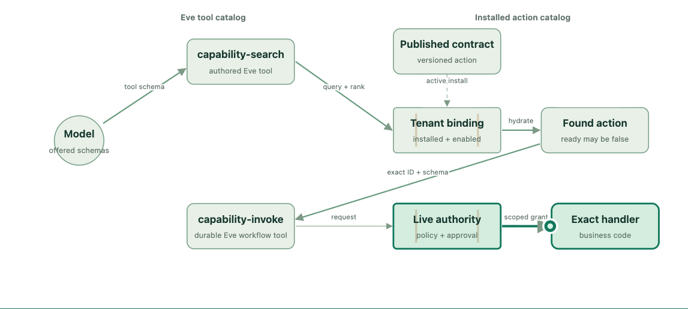
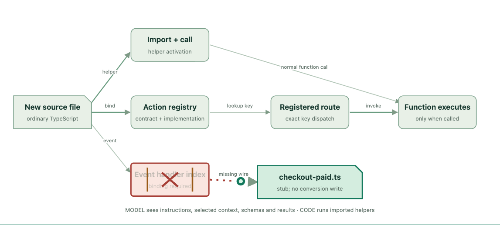
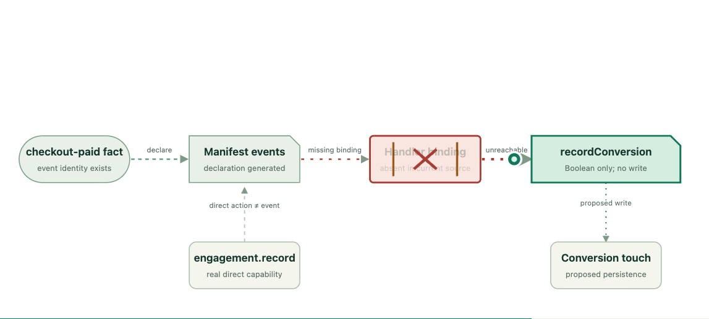
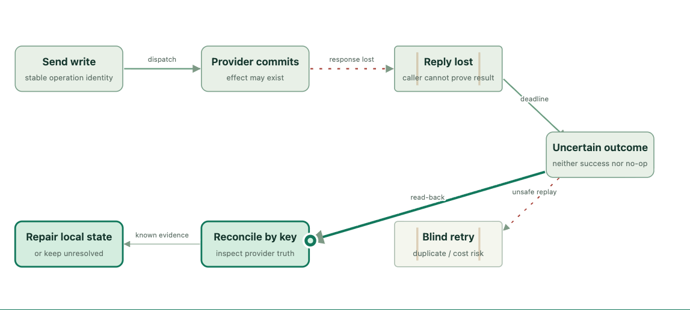
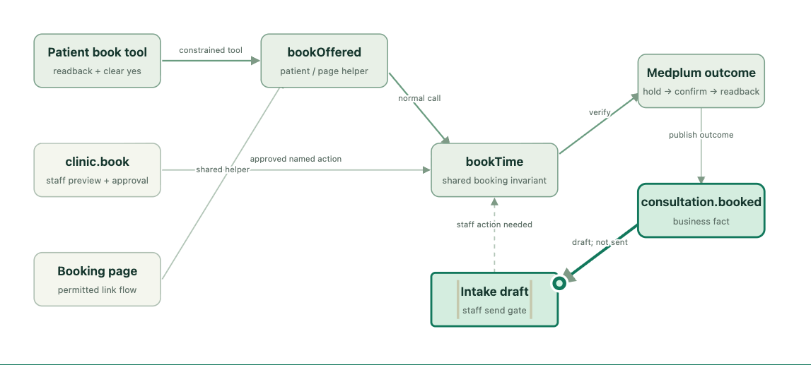
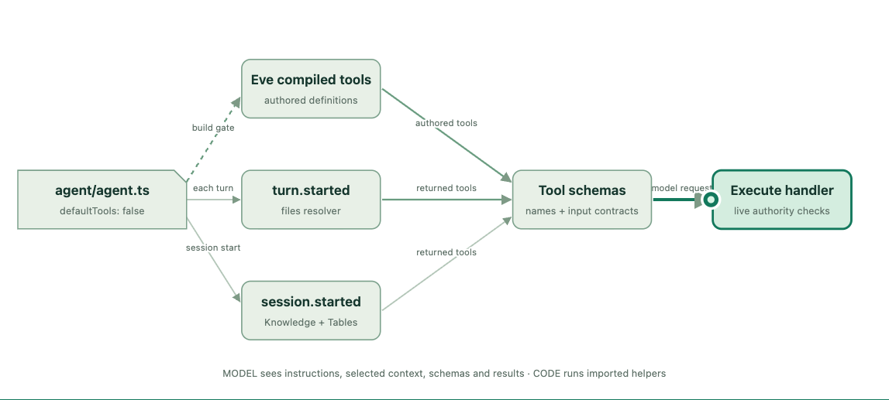
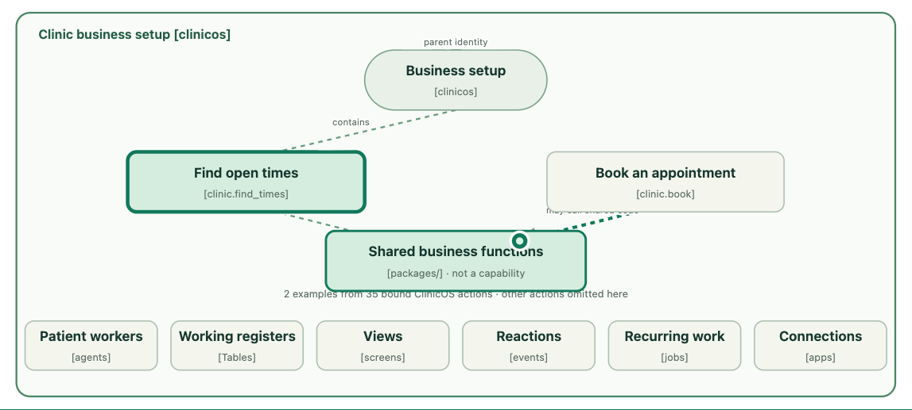
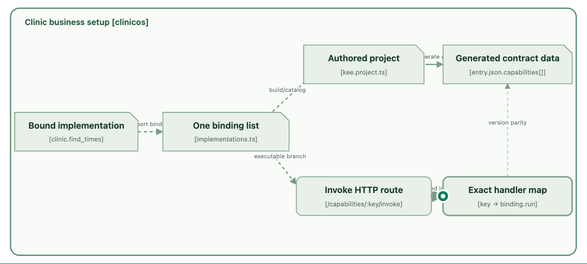
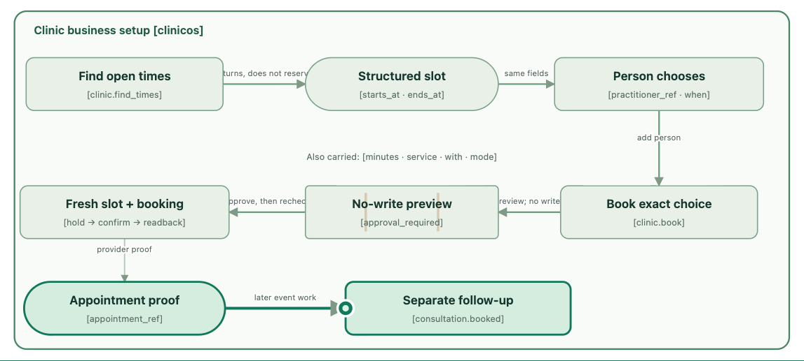

Scene 01 / 22
One setup contains many actions
ClinicOS [clinicos] is one business setup [pack] containing many named actions [capabilities].
This business setup [clinicos] is the parent bundle.
RememberAn action is not an agent. A helper is not automatically an action.
Explain the mechanism and exact terms
Pack containment is the missing connection: project.capabilities and project.agents are sibling declarations, not the same list. ClinicOS has 35 action bindings but only two declared inbound Eve workers. Exact global identity is <pack slug>/<contract key>, verified in Core: clinicos/clinic.find_times and clinicos/clinic.book. Sales slug is sales; verified children include practices.source, practice.enrich and campaign.place. Neither a helper export nor an agent tool becomes a capability without a declared/bound contract.
The model sees instructions, selected context, tool names/descriptions/input schemas and returned results. It does not automatically read or understand every source file. Imported helpers execute as code. Build tooling, tests, evals and documentation have distinct roles.
Source paths, evidence and what remains unverified
Authored source evidence, not a deployment recording. Build-verifier expectations were not executed here. Proposed repairs and experiments are labeled in the scene.
Engineer view: actual Mermaid diagram, rendered offline
Show Mermaid source
Pre-rendered from Mermaid using a local renderer. The SVG is embedded; no library or network is needed to view it.
Illustrations and replay exports · 9 companions









Static images are the default. GIF playback starts only on request; use Stop replay to restore the still.
Research notebook, privacy boundary and reference corrections
This visual edition replaces the text-heavy first guide. The sibling long-form reference is preserved with a correction banner. Source findings refine Sales tool/default and handoff claims, distinguish ClinicOS Eve workers from custom voice/Copilot workers, and explain two Core peer services and workflow ownership.
US/HIPAA scope: sensitive data can appear in enquiry reason, staff task detail, transcripts, Copilot quotes, prompts and optional trace capture beyond Medplum. Vendor agreements, deployed capture settings, access policy and retention were not verified. No compliance verdict or measured latency distribution is claimed. Use the Permission + PHI scene’s health-data variant for the visual flow.
Core v2 b5f3402e71a983cecb12061511eb88714cdd1ba4
ClinicOS local eb6043f2669d671ca701581478c2d6872ded4d0a
Sales local 147eff267d6fe236ad84879ffcd354a31afcb9a6
Full Eve research: tools, discovery, sessions and callbacks
# Eve inside Keemakr: activation, discovery and execution
## Which files become part of the agent, and what is Eve?
### Takeaway Eve is the session, agent-loop, workflow and tool framework used to run Kee. The language model generates the next answer or tool request; Eve executes the loop; Keemakr supplies business permissions, records, approvals and the public conversation interface. A file is not a model tool merely because it lives in the repository. This investigation reads current v2 SHA b5f3402e71a983cecb12061511eb88714cdd1ba4, without installing packages, building, running tests, or inspecting a production deployment.
### Cited Findings - Current package.json pins `eve` 0.80.1. The existing main workspace node_modules has 0.58.1, so it was deliberately NOT used to infer 0.80.1 framework internals. Current source plus authored build verification are the evidence. [1] - `agent/agent.ts` is the root agent definition: it selects getKeeModel(), reasoning/provider routing, compaction threshold 0.1, session input-token ceiling 100 million, defaultTools:false and tool:false. These last two do not disable authored tools; the build verifier checks those authored tools exist while forbidding framework default tools/root delegation. [2] - `scripts/verify-agent-build.mjs` examines the actual compiled manifest (shape 54), expects 24 named static tools, at least Knowledge/files/Tables dynamic modules, no subagents, only asks/turn-hops hooks, and no authored sandbox. It checks required implementation markers in compiled JS. This is a declared build gate; it was not executed here. [3] - `agent/instructions.md` supplies standing behavioral instructions; `agent/instructions/discovery.ts` is a dynamic turn-start resolver. It loads current membership, the business instruction index and installed departments; it emits a user-role context message rather than changing the system prefix, preserving cacheability. Brain and departments load concurrently and independently with Promise.allSettled. [4] - Once-per-turn helpers share membership/setup reads across resolvers; these are context caches only, not permission caches. Every tool still rechecks live authority. [5] - Static tools such as capability-search use defineTool and inputSchema. Long-lived orchestration such as capability-invoke uses defineWorkflowTool and a `'use workflow'` body. Its implementation imports `src/workflows/capability-steps.ts`; that module uses `'use step'` and calls normal Core helpers. A file outside agent/ is therefore used through imports and calls, not magically exposed as a tool. [6] [7] - Dynamic file tools return named tool definitions at turn.started only when private file storage is configured. Their execute implementations live in `agent/lib/file-tools.ts` to avoid build-time closure-lifting problems. Source explicitly says session-start tool loss used to leave files missing for the session. [8] - Knowledge and Tables dynamic tools currently remain session.started resolvers. Knowledge returns no tool on initial identity/read failure, but rechecks actor on every execution. Tables checks current write policy at execution. This difference deserves explicit testing rather than assuming all dynamic tools refresh each turn. [9] [10] - Ordinary src/lib helpers activate only when imported/called. src/app/api/**/route.ts defines Next HTTP endpoints; it does not make a function visible to the model. Eve-facing HTTP endpoints instead use defineChannel/POST under agent/channels, such as progress/result callbacks. [11]
### Inferences Use the following file activation visual: **Authored files → respective loader/compiler → runtime surface**. Do NOT draw one arrow from every file into “AI understands everything.”
| File family | Activation | What the model receives | What actually executes | |---|---|---|---| | agent/agent.ts | Eve compile/runtime config | Selected model/context policy | Eve session/loop configuration | | agent/instructions.md | Eve instructions loading | Standing text | No business side effect | | agent/instructions/*.ts | Declared lifecycle event | Resolved context messages | Database/Brain context reads | | agent/tools/*.ts static | Compiled tool registration | Tool name, description, input schema | Tool execute/workflow handler | | agent/tools/*.ts dynamic | Declared session/turn event | Only returned tool definitions | Resolver, then handler on invocation | | src/workflows/*.ts | Imported by workflow tool/channel | No automatic exposure | Durable orchestration/steps | | src/lib/*.ts | Normal TypeScript imports/calls | No automatic exposure | Server helper implementation | | src/app/api/**/route.ts | Next route discovery | Nothing unless a tool calls it | Authenticated HTTP handler | | agent/channels/*.ts | Eve channel registration | Nothing automatically | HTTP ingress/callback route | | entry.json capability declaration | Publish/install marketplace sync | Search result contract summary | Points to chosen implementation | | packages/agent-sdk | Imported client/handler library | Nothing automatically | Grant verification and broker HTTP calls |
### Gaps - The generated compiled artifact was not built or read in this isolated checkout. The exact static/dynamic names above come from current authored build verification plus actual definitions. - A helper comment describes why closures are separated, but this is not evidence every possible production closure-lifter bug is caught. Unit tests alone cannot validate transformed agent output; build verification and production-bundle smoke checks are relevant.
## How does a business action become enabled, discovered and executed?
### Takeaway There are two separate catalogs: **model tools** (how Kee can search/act) and **business actions** (what an installed business department offers). Installing 100 actions does not inherently produce 100 tools in Kee's model prompt. The root model uses its authored search/invoke tools to discover the right action. Enabling, readiness, member permission and approval are separate gates.
### Cited Findings 1. **Author a contract.** The manifest declaration names an action, human description, input/output schemas, explicit requirements and an implementation. Current validated implementation kinds include agent, team, typescript and work, plus reserved Core handlers. The opening comment saying three kinds is older than the actual switch; do not repeat that stale count. [12] 2. **Compute least-needed dependencies.** Closure is the union of contract requirements, implementing agent requirements, and requirements of tools those agents declare; teams include lead and members. TypeScript/work/Core do not contribute agent edges. This closure is metadata, not arbitrary runtime traversal. [13] 3. **Publish versioned contract rows.** Publishing inserts marketplace_entry_versions and immutable marketplace_capability_contracts with closure, schemas and implementation. Unchanged description embeddings carry forward. Changed descriptions embed outside the transaction, best effort; embedding failure leaves lexical discovery. A release expanding access holds affected installs for consent in the same publish transaction. [14] 4. **Install/consent.** Install sync removes bindings for actions absent from the new version; active installs create bindings enabled=true at declared approval mode or legacy allow default. Existing binding choices survive ON CONFLICT DO NOTHING. Pending approval/connection installs do not gain new bindings until active. [15] 5. **Configure availability.** Owner/admin on marketplace-management surface may PATCH enabled/approval/approvers. The route cannot invent a binding for an uninstalled action. Its comments explicitly say tenant availability grants nobody invocation authority. [16] 6. **Calculate readiness.** Enabled contracts join current published version, enabled marketplace entry and tenant install. Readiness is live installed status plus all required dependencies in this action's closure; personal-account readiness resolves for the acting member. Optional missing dependencies do not make ready false. [17] 7. **Give Kee the department directory.** The turn-start context index lists current company methods and departments, so the model can choose an owning department before searching. Static instructions tell it to read a relevant playbook for work, search a business action, invoke that action, and use Work abilities only when search finds none. [18] 8. **Search by need.** Authenticated capability-search receives only a query, optional owning department and limit. It resolves department slugs, requests at least two candidates for comparison, returns exact IDs, and gives bounded fallback guidance rather than endless searching. [19] 9. **Rank then hydrate.** Semantic query embedding and lexical retrieval supply candidates. Current enabled registry data hydrates them with readiness for this member. Search may hide connected-app actions until connection and suppress direct purchase-order alternatives when a purchasing Pack owns that task. Search is not simply “a vector database returns tool names.” [20] [21] 10. **Explain access and approvers.** matchesForMember enriches candidates with owning department, department permission, eligible grant holders, approvers, missing named approvers and default-calendar advice. Per-Pack lookups share a Promise within a search. Missing advice is omitted rather than fabricated; invocation checks again. These extra dependency/permission reads can be a substantial part of discovery latency. [22] 11. **Invoke under stable operation identity.** capability-invoke calls a durable step using callerRequestId `eve:<native call id>` and authority from the authenticated Eve session. The step handles file handoff, passes approval:'ask', and branches into immediate result, held card or tracked work. [23] [24] 12. **Call the actual target.** Agent implementation selects that agent's runtime; team selects its lead; TypeScript selects entry runtime. This chooses a network endpoint, not automatically another chat session. The SDK example mounts /capabilities/:key/invoke in an Eve channel. It verifies signed grant/audience, finds exact handler, checks tenant mismatch, and returns typed success/business failure. [25] [26] [27]
### Inferences **Visual A: four lights above one action button** - Light 1 Published: contract exists in this release. - Light 2 Available: installed and company enabled it. - Light 3 Ready: required apps/data dependencies are connected for this member. - Light 4 Allowed now: member/role/grant/policy/approval checks pass at execution. Show missing lights as specific reasons, never a single misleading “agent enabled” switch.
**Visual B: two catalogs with one bridge** Left column “What Kee can call” has capability-search and capability-invoke among authored tools. Right column “What this business installed” has named booking, outreach and scheduling contracts. Search arrow crosses left→right, exact-ID contract returns right→left, invoke crosses back under server checks. A separate narrow arrow from the chosen contract goes to its target handler. No arrow from manifest description straight into unrestricted model execution.
**Visual C: answer “I added this file—how is it used?”** Pick the file's role first. A new helper needs an import/call. A model tool needs a tool definition and registration/compile inclusion. A marketplace action needs manifest declaration, handler route, published contract, live install/binding and ready dependencies. An event handler needs event declaration/binding and dispatcher, not model tool registration. A screen needs its screen declaration/render entry. A prompt file is instructions, not executable authority.
### Gaps - Contract registration and handler registration are separate. A published action can exist while its deployed runtime lacks its handler; SDK then returns unknown_capability. Validate manifest→handler parity in a deployed build. - Existence of a tool file and a passing Next build alone do not prove inclusion in Eve output. The build verifier explicitly notes Next does not compile agent/. - Search thresholds are stated uncalibrated in prior notes. Correct ownership and description examples need retrieval evaluation against confusing actions; a high semantic similarity is not permission or clinical correctness.
## What runs where, and where can a reply stall?
### Takeaway The deployed source topology is two Core peer services plus separately installed business runtimes and model providers. Source files imported into Eve tools can execute inside the Eve service even if their folder is src/lib. Workflow ownership matters more than folder name: a callback reaching the wrong service can save data yet fail to wake the waiting workflow.
### Cited Findings - vercel.ts uses withEve to declare Next web and generated Eve peer services from the same repository. Web binds KEE_WORK_OWNER_URL to Eve; Eve tools dispatch to their local owner and self-binding is explicitly forbidden. Public approval, Pack report, outcome, screen reply and scheduler paths route to Eve. Ordinary catchall routes to web. [28] [29] [30] - Next config applies withWorkflow to compile native steps for web, while Eve builds separately. Source external dependencies/native binaries require explicit shipping and can work locally while failing in the deployed bundle. [31] [32] - Core's Eve Client forwards the initiating member credential to the app origin, refuses redirects, and attaches session by ID. Eve channel independently verifies the user and checks private session owner; turnPolicy is steer. A caller-supplied session ID alone confers no access. [33] [34] - A steering message receipt can wait until the active turn's next step boundary, so a slow tool can delay receipt up to the 60-second deadline; accepting the user's new message is distinct from finishing the old action. [35] - Core reads/reconnects replay Eve log into WireProjection; followEvents starts at index zero because no stored projection exists. WireProjection explicitly documents O(n²) re-derivation per replay, a known optimization candidate for long sessions. Normal already-following sends can return stream receipts without full acceptance snapshot. [36] [37] [38] - The root Kee model is `main` from centralized model.ts; current source main route is DeepSeek Flash with medium reasoning. This is a configured route, not “Eve is the LLM.” Pack calls instead send permitted labels to Core's model forwarding API; Core sets actual provider/model/effort and meters usage, so a Pack's model need not be the root Kee model. [39] [40] [41] - Pack forwarding API requires MODEL_CALL_SCOPE and gives model calls a distinct rate bucket; maxDuration=800 is a stream function ceiling, not normal latency or the capability's total business deadline. [42] - A tracked work follower establishes one owner hook and completion/progress hooks before starting Pack work; it waits on hooks, not polling. Pack reports authenticate and save before resume. The report helper explicitly says a resume from Next can be recorded but never wake the run because Eve's workflow queue namespace owns it. [43] [44] - asks hook persists sidebar turn state/questions and closes abandoned approvals. Hooks are at least once; handlers are idempotent and retry a transient state write once. Framework hook exceptions are logged rather than automatically replayed indefinitely. [45] [46] - Eve instrumentation records native model/tool/run structure. Runtime-context marker kee.model.context-ready marks context readiness, explicitly not provider first output or visible text. Content-capture policy applies before Agent Runs exporter, because a later processor cannot redact what an earlier exporter already sent. [47] [48]
### Inferences **Diagram D: a typed staff request, animate each arrow** 1 Person/client → Next web: POST conversation turn. 2 Next → database: authenticate/own/rate/context reads. 3 Next → Eve public channel: user bearer + session/message. 4 Eve → Core DB/Brain from imported resolver code: member and company index. 5 Eve → model provider: instructions + context + offered tools. 6 Model → Eve: tool request capability-search. 7 Eve tool → DB + embedding provider + dependency services: rank/hydrate; return candidates. 8 Eve → model: tool result; model selects exact action/input. 9 Eve workflow tool → governed Core helper executing as workflow step: record/gate/grant. 10 Governed helper → Pack runtime: scoped invocation. 11 Pack handler → Core broker → permitted data/app provider; optionally Pack → Core model proxy → another model provider. 12 Pack → waiting caller: typed result OR Pack → Eve callback endpoint: saved progress/result and hook resume for tracked Work. 13 Eve → model: settled tool output; model generates grounded reply. 14 Eve log → Next projection/stream → client paint. There may be multiple model/tool iterations or no Pack/model call for a deterministic helper. Number these as instructional sequence steps, never a guaranteed count of HTTP hops.
**Diagram E: a paused approval is a bookmark, not a burning loop** Tool workflow creates operation → approval card is persisted → workflow waits on hook → user can continue conversation → authorized reviewer answer routes to Eve owner → same workflow resumes → gates rechecked → external action executes → outcome posted to requester conversation. Fade the model lane while waiting; keep the persisted record and hook visibly present.
**Precise latency/failure overlays** - Before model: membership/setup/Brain/departments and dynamic tool resolution; graph their parallel portions instead of adding every duration as serial. - Before discovery result: embedding, DB retrieval, readiness, current members/roles, approver rules and possibly remote ability discovery; optimizing only vector lookup misses this work. - Between model steps: search→invoke is at least conceptually sequential because invocation needs discovered identity/schema; do not parallelize dependent calls or remove permission checks. - During effect: provider latency, throttling and remote runtime startup; timeout can leave effect uncertain. Use stable receipts and reconcile. - During resumed work: callback delivered to web instead of Eve owner can make “saved but forever waiting.” Verify service routing and hook identity before blaming the LLM. - During long chat reconnect: zero-index replay and O(n²) projection may dominate before any new model response. Benchmark synthetic transcript sizes, reconnect rate and client paint, then consider incremental projection/checkpointing while preserving exact event sequences. - During live steering: receipt waits for next step boundary; a long tool call can delay cancellation/redirection feedback. Inspect framework supported interruption semantics and distinguish requested cancel from confirmed cancellation; never promise remote side effects were undone.
**Priority remediation for the guide** 1 Prove authorization and effect identity for one appointment/send workflow end to end, including revoked access, wrong tenant, duplicate callback and ambiguous timeout. 2 Add a synthetic diagnostic “trace this request” story with session, turn, native tool-call and operation/work IDs linked and content excluded. 3 Verify compiled tool set and deployment-handler parity; show specific failure badges for absent tool, disabled action, unready dependency, forbidden member, missing handler and callback-owner mismatch. 4 Measure cold/warm startup, discovery hydration, model steps, Pack execution and replay separately; current telemetry names are not proof of exported metrics (prior notes explain NoopMeter). 5 Optimize measured bottleneck with bounded independent reads, stable prompt prefixes, sensible batch sizes, fewer repeated searches, checkpointed long work and replay improvements. Re-run correctness gates before calling it an improvement.
### Gaps - Actual deployed service URLs, regions, tool manifest, environment flags, model overrides and active install versions remain unverified. - Older ADRs about fleet pins at Eve 0.27.8/0.40 describe historical remote-agent migration and must not substitute for current 0.80.1 source topology. - Framework semantics not proved by current source/build checks (exact default loader behavior, internal queues, compiler captures and retry scheduling) need the pinned framework's own docs/artifact or controlled build inspection. The main workspace's installed 0.58.1 is the wrong reference.
### Source index 1. [package.json:42-88](https://github.com/fsztpartners/keemakr/blob/b5f3402e71a983cecb12061511eb88714cdd1ba4/package.json#L42-L88) 2. [agent/agent.ts:1-31](https://github.com/fsztpartners/keemakr/blob/b5f3402e71a983cecb12061511eb88714cdd1ba4/agent/agent.ts#L1-L31) 3. [scripts/verify-agent-build.mjs:1-135](https://github.com/fsztpartners/keemakr/blob/b5f3402e71a983cecb12061511eb88714cdd1ba4/scripts/verify-agent-build.mjs#L1-L135) 4. [agent/instructions/discovery.ts:1-105](https://github.com/fsztpartners/keemakr/blob/b5f3402e71a983cecb12061511eb88714cdd1ba4/agent/instructions/discovery.ts#L1-L105) 5. [agent/lib/turn-member.ts:1-65](https://github.com/fsztpartners/keemakr/blob/b5f3402e71a983cecb12061511eb88714cdd1ba4/agent/lib/turn-member.ts#L1-L65) 6. [agent/tools/capability-invoke.ts:1-32](https://github.com/fsztpartners/keemakr/blob/b5f3402e71a983cecb12061511eb88714cdd1ba4/agent/tools/capability-invoke.ts#L1-L32) 7. [src/workflows/capability-steps.ts:1-61](https://github.com/fsztpartners/keemakr/blob/b5f3402e71a983cecb12061511eb88714cdd1ba4/src/workflows/capability-steps.ts#L1-L61) 8. [agent/tools/my-files.ts:10-102](https://github.com/fsztpartners/keemakr/blob/b5f3402e71a983cecb12061511eb88714cdd1ba4/agent/tools/my-files.ts#L10-L102) 9. [agent/tools/knowledge-search.ts:41-85](https://github.com/fsztpartners/keemakr/blob/b5f3402e71a983cecb12061511eb88714cdd1ba4/agent/tools/knowledge-search.ts#L41-L85) 10. [agent/tools/tables.ts:367-395](https://github.com/fsztpartners/keemakr/blob/b5f3402e71a983cecb12061511eb88714cdd1ba4/agent/tools/tables.ts#L367-L395) 11. [agent/channels/pack-report.ts:1-10](https://github.com/fsztpartners/keemakr/blob/b5f3402e71a983cecb12061511eb88714cdd1ba4/agent/channels/pack-report.ts#L1-L10) 12. [src/lib/marketplace/capability-schema.ts:349-470](https://github.com/fsztpartners/keemakr/blob/b5f3402e71a983cecb12061511eb88714cdd1ba4/src/lib/marketplace/capability-schema.ts#L349-L470) 13. [src/lib/marketplace/capability-schema.ts:500-565](https://github.com/fsztpartners/keemakr/blob/b5f3402e71a983cecb12061511eb88714cdd1ba4/src/lib/marketplace/capability-schema.ts#L500-L565) 14. [src/lib/marketplace/index.ts:250-318](https://github.com/fsztpartners/keemakr/blob/b5f3402e71a983cecb12061511eb88714cdd1ba4/src/lib/marketplace/index.ts#L250-L318) 15. [src/lib/marketplace/index.ts:1249-1278](https://github.com/fsztpartners/keemakr/blob/b5f3402e71a983cecb12061511eb88714cdd1ba4/src/lib/marketplace/index.ts#L1249-L1278) 16. [src/app/api/capabilities/[slug]/[key]/route.ts:1-99](https://github.com/fsztpartners/keemakr/blob/b5f3402e71a983cecb12061511eb88714cdd1ba4/src/app/api/capabilities/[slug]/[key]/route.ts#L1-L99) 17. [src/lib/marketplace/capabilities.ts:84-174](https://github.com/fsztpartners/keemakr/blob/b5f3402e71a983cecb12061511eb88714cdd1ba4/src/lib/marketplace/capabilities.ts#L84-L174) 18. [agent/instructions.md:1-15](https://github.com/fsztpartners/keemakr/blob/b5f3402e71a983cecb12061511eb88714cdd1ba4/agent/instructions.md#L1-L15) 19. [agent/tools/capability-search.ts:23-81](https://github.com/fsztpartners/keemakr/blob/b5f3402e71a983cecb12061511eb88714cdd1ba4/agent/tools/capability-search.ts#L23-L81) 20. [src/lib/marketplace/capability-search.ts:157-245](https://github.com/fsztpartners/keemakr/blob/b5f3402e71a983cecb12061511eb88714cdd1ba4/src/lib/marketplace/capability-search.ts#L157-L245) 21. [src/lib/marketplace/capability-search.ts:302-332](https://github.com/fsztpartners/keemakr/blob/b5f3402e71a983cecb12061511eb88714cdd1ba4/src/lib/marketplace/capability-search.ts#L302-L332) 22. [src/lib/marketplace/capability-matches.ts:62-175](https://github.com/fsztpartners/keemakr/blob/b5f3402e71a983cecb12061511eb88714cdd1ba4/src/lib/marketplace/capability-matches.ts#L62-L175) 23. [agent/tools/capability-invoke.ts:209-240](https://github.com/fsztpartners/keemakr/blob/b5f3402e71a983cecb12061511eb88714cdd1ba4/agent/tools/capability-invoke.ts#L209-L240) 24. [src/workflows/capability-steps.ts:4-61](https://github.com/fsztpartners/keemakr/blob/b5f3402e71a983cecb12061511eb88714cdd1ba4/src/workflows/capability-steps.ts#L4-L61) 25. [src/lib/marketplace/capability-schema.ts:519-533](https://github.com/fsztpartners/keemakr/blob/b5f3402e71a983cecb12061511eb88714cdd1ba4/src/lib/marketplace/capability-schema.ts#L519-L533) 26. [packages/agent-sdk/src/capabilities.ts:1-26](https://github.com/fsztpartners/keemakr/blob/b5f3402e71a983cecb12061511eb88714cdd1ba4/packages/agent-sdk/src/capabilities.ts#L1-L26) 27. [packages/agent-sdk/src/capabilities.ts:126-194](https://github.com/fsztpartners/keemakr/blob/b5f3402e71a983cecb12061511eb88714cdd1ba4/packages/agent-sdk/src/capabilities.ts#L126-L194) 28. [vercel.ts:1-12](https://github.com/fsztpartners/keemakr/blob/b5f3402e71a983cecb12061511eb88714cdd1ba4/vercel.ts#L1-L12) 29. [vercel.ts:63-110](https://github.com/fsztpartners/keemakr/blob/b5f3402e71a983cecb12061511eb88714cdd1ba4/vercel.ts#L63-L110) 30. [vercel.ts:200-223](https://github.com/fsztpartners/keemakr/blob/b5f3402e71a983cecb12061511eb88714cdd1ba4/vercel.ts#L200-L223) 31. [next.config.ts:15-41](https://github.com/fsztpartners/keemakr/blob/b5f3402e71a983cecb12061511eb88714cdd1ba4/next.config.ts#L15-L41) 32. [next.config.ts:129-145](https://github.com/fsztpartners/keemakr/blob/b5f3402e71a983cecb12061511eb88714cdd1ba4/next.config.ts#L129-L145) 33. [src/lib/operator/eve-conversation.ts:68-88](https://github.com/fsztpartners/keemakr/blob/b5f3402e71a983cecb12061511eb88714cdd1ba4/src/lib/operator/eve-conversation.ts#L68-L88) 34. [agent/channels/eve.ts:12-55](https://github.com/fsztpartners/keemakr/blob/b5f3402e71a983cecb12061511eb88714cdd1ba4/agent/channels/eve.ts#L12-L55) 35. [src/lib/operator/eve-conversation.ts:52-57](https://github.com/fsztpartners/keemakr/blob/b5f3402e71a983cecb12061511eb88714cdd1ba4/src/lib/operator/eve-conversation.ts#L52-L57) 36. [src/lib/operator/eve-conversation.ts:113-169](https://github.com/fsztpartners/keemakr/blob/b5f3402e71a983cecb12061511eb88714cdd1ba4/src/lib/operator/eve-conversation.ts#L113-L169) 37. [src/lib/operator/eve-conversation.ts:171-201](https://github.com/fsztpartners/keemakr/blob/b5f3402e71a983cecb12061511eb88714cdd1ba4/src/lib/operator/eve-conversation.ts#L171-L201) 38. [src/lib/operator/eve-projection.ts:86-94](https://github.com/fsztpartners/keemakr/blob/b5f3402e71a983cecb12061511eb88714cdd1ba4/src/lib/operator/eve-projection.ts#L86-L94) 39. [src/lib/model.ts:75-110](https://github.com/fsztpartners/keemakr/blob/b5f3402e71a983cecb12061511eb88714cdd1ba4/src/lib/model.ts#L75-L110) 40. [src/lib/model.ts:355-395](https://github.com/fsztpartners/keemakr/blob/b5f3402e71a983cecb12061511eb88714cdd1ba4/src/lib/model.ts#L355-L395) 41. [src/lib/model-forward.ts:1-21](https://github.com/fsztpartners/keemakr/blob/b5f3402e71a983cecb12061511eb88714cdd1ba4/src/lib/model-forward.ts#L1-L21) 42. [src/app/api/capability/model/v1/chat/completions/route.ts:1-20](https://github.com/fsztpartners/keemakr/blob/b5f3402e71a983cecb12061511eb88714cdd1ba4/src/app/api/capability/model/v1/chat/completions/route.ts#L1-L20) 43. [src/workflows/pack-execution.ts:143-204](https://github.com/fsztpartners/keemakr/blob/b5f3402e71a983cecb12061511eb88714cdd1ba4/src/workflows/pack-execution.ts#L143-L204) 44. [src/lib/work/pack-report.ts:11-32](https://github.com/fsztpartners/keemakr/blob/b5f3402e71a983cecb12061511eb88714cdd1ba4/src/lib/work/pack-report.ts#L11-L32) 45. [agent/hooks/asks.ts:1-21](https://github.com/fsztpartners/keemakr/blob/b5f3402e71a983cecb12061511eb88714cdd1ba4/agent/hooks/asks.ts#L1-L21) 46. [agent/hooks/asks.ts:28-103](https://github.com/fsztpartners/keemakr/blob/b5f3402e71a983cecb12061511eb88714cdd1ba4/agent/hooks/asks.ts#L28-L103) 47. [agent/instrumentation/keemakr.ts:5-21](https://github.com/fsztpartners/keemakr/blob/b5f3402e71a983cecb12061511eb88714cdd1ba4/agent/instrumentation/keemakr.ts#L5-L21) 48. [agent/instrumentation/otel.ts:5-19](https://github.com/fsztpartners/keemakr/blob/b5f3402e71a983cecb12061511eb88714cdd1ba4/agent/instrumentation/otel.ts#L5-L19)
### Search semantics correction and diagram constraints Default capability search filters `b.enabled` in both semantic and lexical SQL and excludes `linked_workspaces:true` declarations from this workspace's member search. The hydration query joins enabled marketplace entries and the current version. It does NOT filter the result list down to ready=true or already-approved actions: matchFacts explicitly returns `ready` and `missing` fields, and gatesFor adds permission/approver advice. A candidate with ready=false can therefore be found and explained; discovery is not a promise it can run. Ordinary policy-disabled or permission-unavailable candidate advice is not equivalent to absent published contract. Sources: capability-search.ts:182-243,302-325; capabilities.ts:155-170; capability-matches.ts:125-175,226-251.
Use this state model, with independent labels rather than a single green light: - **Published**: immutable contract in current entry version. Does not mean installed anywhere. - **Installed/consented**: organization's installation accepted current declared access; a widened release can move the install back to held consent. - **Enabled**: tenant binding availability. Owner/admin can toggle; disabling ordinarily removes it from default discovery. - **Discoverable for this query**: enabled/current/hydratable and selected by ranking/department/visibility filters; wording/embedding availability/limits can affect whether a query finds it. - **Ready for this member**: installation live and every required declared dependency satisfied, including personal-account resolution. A discoverable result can say ready=false. - **Permitted to request**: live membership, department/role/action gates pass; discovery may instead say unavailable or request_required. - **Approved to execute**: if required, an authorized reviewer has accepted the exact held action; prepared/draft/requested approval are earlier states. - **Completed**: confirmed business result, not a dispatch or acceptance receipt.
The enable route has two distinct controls: assertMarketplaceManagement is a product-surface gate based on client information (header omission is not a security boundary); assertManagementRole enforces owner/admin from verified session authority. Do not depict a client header as the source of permission. The route applies both. Source: src/lib/marketplace/management-guard.ts:1-42 and src/app/api/capabilities/[slug]/[key]/route.ts:47-71.
**Dynamic tool freshness risk, carefully scoped:** Knowledge and Tables currently resolve at session.started, while files resolves at turn.started. Source comments on files document an earlier lost session-start dispatch failure mode. This suggests a concrete regression test: create session while a dynamic resolver cannot read identity/dependency; restore it; start a later turn; check whether the tool appears without a new session. It is a test hypothesis for the remaining modules, not a reproduced current bug. Execute-time authorization rechecks remain necessary even when visibility is stale.
Diagram variant: show a discovery result card with three badges **Found**, **Missing calendar**, **Approval required**. The enabled binding can be on while ready=false and approved=false. Then connecting calendar changes Ready; submitting invokes the approval flow; reviewer acceptance changes Approved; only confirmed result changes Completed. Show Disabled as a branch that removes the default result, and an admin's onlyEnabled:false view as a separate route.
Full pack research: real file paths and execution lanes
# Pack files and agent execution deep dive
This supplements packs.md and is specifically for the revised visual explainer. Snapshot SHAs unchanged: ClinicOS eb6043f2669d671ca701581478c2d6872ded4d0a; Sales147eff267d6fe236ad84879ffcd354a31afcb9a6. Source inspection only; dependency installation/build/deploy unverified. **The most important explanation: files outside Eve are ordinary application code. They run when an actual route, registered handler, job, screen action or Eve tool calls/imports them. Merely putting a file in the pack does not make it an agent tool.**
## What activates each folder?
### Takeaway The pack contains a business application around its conversation workers. Draw an application wiring map, not a list of definitions. There are independent build/catalog and runtime paths.
### Cited Findings - **Authored blueprint — kee.project.ts** imports tables, app requirements, named event identities, eventHandlers, capabilities implementations, inbound agents, JOBS. It describes what Core can install/discover, not a process that starts every file. [ClinicOS blueprint imports,1–14](/Users/sobingt/projects/covalify/clinicos/kee.project.ts:1). - **Marketplace declaration — entry.json** is generated. `tooling/sync-entry.mjs` imports project, validates descriptions/cards/Table widths, emits dependencies + manifest. Agent root filesystem paths are deliberately removed from public agent declarations (line62); meta keeps first root (82). It emits capability contract/target (66–77), schedules from jobs (79–80), events AND registered handlers (81), then builds UI registry (89–138). Therefore source-to-entry is build tooling, not conversation execution. [Generator](/Users/sobingt/projects/covalify/clinicos/tooling/sync-entry.mjs:15). - **Conversation app — agents/concierge/agent and agents/intake/agent** are separate Eve applications with agent.ts, instructions, tools, hooks, channels, lib/session state and instrumentation. Both package scripts `eve dev --no-ui` / `eve build`; Eve0.80.1. Their root `defineAgent` picks per-step model and disables default tools. Source-based convention discovery is implied by Eve app structure/build; actual generated build output was not inspected. [Concierge package](/Users/sobingt/projects/covalify/clinicos/agents/concierge/package.json:1), [Intake package](/Users/sobingt/projects/covalify/clinicos/agents/intake/package.json:1). - **Named business action — capabilities/x/capability.ts** is identity/description/schema/prerequisites/approval/timeout/presentation. It is not implementation. `capabilities/book/capability.ts29–40` declares clinic.book, approval_required,60s and preview. **implementation.ts** binds that contract to run() and target, imports shared business functions. **implementations.ts** imports all35 bindings and is consumed both by generator and invoke route. A new implementation file left out of registry is not a callable catalog action. [Contract](/Users/sobingt/projects/covalify/clinicos/capabilities/book/capability.ts:29), [Binding](/Users/sobingt/projects/covalify/clinicos/capabilities/book/implementation.ts:1), [Registry](/Users/sobingt/projects/covalify/clinicos/capabilities/implementations.ts:1), [Invocation](/Users/sobingt/projects/covalify/clinicos/app/capabilities/[key]/invoke/route.ts:1). - **Shared application code — packages/** holds reusable booking, clinical forms, records, rules, Brain readers, consent, messaging, runtime callback clients and schemas. These are imports, not tools. Example `packages/booking/book.ts` is called by staff business action; Concierge tool calls bookOffered helper, which calls bookTime. Booking page uses same bookOffered. Shared helpers allow different entry routes to enforce the same actual booking invariant. [Staff import3/run50](/Users/sobingt/projects/covalify/clinicos/capabilities/book/implementation.ts:3), [Helper import13/run108](/Users/sobingt/projects/covalify/clinicos/packages/booking/book-offered.ts:13), [Booking page import26/run307](/Users/sobingt/projects/covalify/clinicos/packages/booking/booking-page.ts:26). - **Table schemas — packages/schemas/tables.ts** describe required operational registers for Core provisioning/validation. They are not a second in-pack SQL database. `project.tables` flows through generator dependencies40, runtime reads/writes call Core SDK with grant. [Generator40](/Users/sobingt/projects/covalify/clinicos/tooling/sync-entry.mjs:39), [SDK client wrapper](/Users/sobingt/projects/covalify/clinicos/packages/runtime/kee.ts:1). - **HTTP entry doors — app/** contains Next handlers. `/channels/v1/deliver` forwards to separate Eve deploys; `/capabilities/[key]/invoke` dispatches bindings; `/events/v1/deliver` dispatches eventHandlers; `/screens/[screen]/load` calls registry screen.load for a signed viewer; `/links/[purpose]/form/[[...action]]` calls linkCall→serveLink for deterministic load/save/submit/state; voice/copilot start routes open custom workers; `/api/work` starts scheduled workflow. Each route has a distinct authority check and purpose. [Channel route](/Users/sobingt/projects/covalify/clinicos/app/channels/v1/deliver/route.ts:1), [Screen route](/Users/sobingt/projects/covalify/clinicos/app/screens/[screen]/load/route.ts:1), [Form route](/Users/sobingt/projects/covalify/clinicos/app/links/[purpose]/form/[[...action]]/route.ts:1). - **Business reactions — handlers/events/** must be registered in index.ts. Event declaration alone is not subscription or executable receiver. Next event route imports that list; SDK checks request against runtime audience/Core URL. send-confirmation handler explicitly binds consultationBooked, reads consultation, builds brief and confirmation with timing constraints. [Index](/Users/sobingt/projects/covalify/clinicos/handlers/events/index.ts:1), [Route](/Users/sobingt/projects/covalify/clinicos/app/events/v1/deliver/route.ts:1), [Handler20–46](/Users/sobingt/projects/covalify/clinicos/handlers/events/send-confirmation.ts:20). - **Recurring business work — jobs/index.ts → JOBS** supplies both manifest schedules and `/api/abilities` discovery. `/api/work` authorizes work/kind, checks JOBS membership, starts clinicWork. Workflow binds exactly one run, invokes runJob then finishes; `steps.ts` dynamically imports JOBS and finds job.run, mints per-step tokens through Core authority. These are code jobs, not model agents improvising a schedule. Generator says admin must enable schedule and choose zone, overlap/catchUp skip. [Abilities](/Users/sobingt/projects/covalify/clinicos/app/api/abilities/route.ts:1), [Work route](/Users/sobingt/projects/covalify/clinicos/app/api/work/route.ts:1), [Workflow](/Users/sobingt/projects/covalify/clinicos/workflows/clinic-work.ts:1), [Steps33–44](/Users/sobingt/projects/covalify/clinicos/workflows/steps.ts:33). - **Visual surfaces — ui/** screen/surface declarations are compiled by ui-sdk builder into entry manifest and generated ui/screen-registry.ts. Runtime route resolves exact screen ID and calls load(); screen files are code that produces a UI tree, not Eve prompt context. Tooling currently uses a temporary `suggests` overlay and changes generated .js imports to .ts for Turbopack; concrete SDK interoperability debt. [Generator89–138](/Users/sobingt/projects/covalify/clinicos/tooling/sync-entry.mjs:89), [Load route14–20](/Users/sobingt/projects/covalify/clinicos/app/screens/[screen]/load/route.ts:14). - **Observability — root instrumentation.ts** is Next startup registration. It registers host telemetry + AI SDK7 OpenTelemetry. Separate Eve agent instrumentation re-exports shared agent-otel. Telemetry config observes running code; it does not make tools/actions active. [Startup](/Users/sobingt/projects/covalify/clinicos/instrumentation.ts:1), [Agent OTEL](/Users/sobingt/projects/covalify/clinicos/packages/runtime/agent-otel.ts:1). - **tests/evals/docs** are validation/explanation assets. Package scripts invoke tests/evals explicitly; presence in bundle does not mean called in a patient turn. `package.json bundle` includes selected code directories; actual Next/Eve build outputs depend on reachable imports/framework conventions, not zip alone. No proof of live deployed bundle from file presence. [Scripts](/Users/sobingt/projects/covalify/clinicos/package.json:1).
### Inferences Adding a new feature needs answers to four concrete questions: **Which door starts it? Which registry exposes it? Which function does the work? Which Core grant authorizes its effects?** A helper needs an import/call; an agent tool needs Eve tool registration/discovery; a capability needs a contract + binding + registry + Core install; event reaction needs identity + handler registration + delivery; job needs registry + admin-enabled schedule + runtime work authority.
### Gaps No exhaustive dead-code scan, generated Eve bundle inspection or deployed artifact comparison performed. Do not label an arbitrary file orphan merely because one search did not find it. The Sales conversion example below is a demonstrated unwired stub, not proof all handlers are unwired.
## Which workers are Eve agents, and what happens inside them?
### Takeaway Use six rows, but visually distinguish **Eve conversation sessions** from **custom live-call workers**. Folder name `agents` does not guarantee same runtime.
### Cited Findings **1 Concierge — Eve0.80.1** - Source `defineAgent({model:defineDynamic(step.started→keeModelResolver('concierge')),defaultTools:false})`. Only authored tools, no default shell/files/web. Native Eve channel explicitly disabled; Core channel SDK handleChannelDelivery is the allowed ingress. [Agent](/Users/sobingt/projects/covalify/clinicos/agents/concierge/agent/agent.ts:1), [Disabled direct channel](/Users/sobingt/projects/covalify/clinicos/agents/concierge/agent/channels/eve.ts:1), [Inbound122–135](/Users/sobingt/projects/covalify/clinicos/agents/concierge/agent/channels/inbound.ts:122). - **17 tool files**: knowledge (Core KB external_safe passages only); service (tenant treatment write-up); next-question/find-times (gather missing booking info/find actual open times); remember (name/interest/reason); give-email/send-code (identity proof setup); read-back (bind exact offered slot and request yes); book (book only valid readback after clear yes); confirm-visit (attendance); change-visit (policy-allowed cancellation/keep or team change request); new-link (staff task, never automatic resend); stop-follow-ups (record own opt-out/contact stop); hand-off (team work/ownership behavior); urgent (safety escalation); reply (guarded outbound message); health-fact (dynamic, absent unless patient_offered_facts enabled). [Tool folder exemplar](/Users/sobingt/projects/covalify/clinicos/agents/concierge/agent/tools/book.ts:29), [Dynamic health-fact15–29](/Users/sobingt/projects/covalify/clinicos/agents/concierge/agent/tools/health-fact.ts:15), [KB](/Users/sobingt/projects/covalify/clinicos/agents/concierge/agent/tools/knowledge.ts:5), [New link13–43](/Users/sobingt/projects/covalify/clinicos/agents/concierge/agent/tools/new-link.ts:13). - Session address = Core conversation ID; defineState stores identity-so-far, offered exact slots, selected/readback, safety hold, delivered vs held reply, evidence of real effects, attempt results, delivery dedupe, unscreened words and cancellation status. This is **conversation working state**, not tenant Brain, contact directory or clinical chart. [State22–166](/Users/sobingt/projects/covalify/clinicos/agents/concierge/agent/lib/session.ts:22). - Turn hook dedupes delivery before other work; safety screen runs before main model; then restores call facts, resets this-turn attempt and saves texted email. Cancelled predecessor settles stopped booking under new valid turn/grant rather than pretending cancellation rolled back remote writes. [Hook13–60](/Users/sobingt/projects/covalify/clinicos/agents/concierge/agent/hooks/reset-turn.ts:13). - Dynamic instructions resolve at turn.started: clinic Brain/settings/known person, safety hold and feature flag; knowledge is refreshed by version, not dumped forever into history. Person context is a separate user-role data block. Model resolved per step so every model hop remains under current turn authority. [Clinic instructions21–46](/Users/sobingt/projects/covalify/clinicos/agents/concierge/agent/instructions/clinic.ts:21), [Person instructions11–18](/Users/sobingt/projects/covalify/clinicos/agents/concierge/agent/instructions/person.ts:11). - Reply loop: model asks tool→code enforces→result returns→model may continue; exact code reply can end turn via `endsTurn:stops` and avoid another model round. Free model words pass claim guard before Core reply action. Unsupported booking/team/price claims return rewrite reasons; failed guard yields fallback; Core still refuses superseded/staff-owned turns. message.completed plain text uses same guarded send path, not an unchecked backdoor. [Reply17–88](/Users/sobingt/projects/covalify/clinicos/agents/concierge/agent/lib/reply.ts:17), [Inbound125–130](/Users/sobingt/projects/covalify/clinicos/agents/concierge/agent/channels/inbound.ts:125).
**2 Intake — Eve0.80.1** - defineAgent uses per-step Core `conversation` resolver, defaultTools:false, disabled native Eve channel. **5 tools**: save-answers, write-up, change-visit, hand-off, reply. Not all35 clinic capabilities are available as tools. [Agent](/Users/sobingt/projects/covalify/clinicos/agents/intake/agent/agent.ts:1), [Tool save](/Users/sobingt/projects/covalify/clinicos/agents/intake/agent/tools/save-answers.ts:1). - Patient-link opening is deterministic code: resolve live/moved appointment, verify row contact matches, record chat link, read visit/form, greet. Typed words start safety screen while visit loads; safety context waits at most2s; failed model safety read holds for team instead of starting main answer. Known limit: unread words are not kept for later on visit page. [Inbound53–111](/Users/sobingt/projects/covalify/clinicos/agents/intake/agent/channels/inbound.ts:53). - Each model turn re-reads current form and snapshots answer revisions. save-answers marks said/inferred provenance, rejects invalid source linkage, requires readback for inferred/address/health answers, saves against revisions to avoid overwriting a concurrent page tap, then returns updated form. Page taps themselves call deterministic form route with **no Eve/model turn**. [Dynamic form13–41](/Users/sobingt/projects/covalify/clinicos/agents/intake/agent/instructions/clinic.ts:13), [Save tool21–35](/Users/sobingt/projects/covalify/clinicos/agents/intake/agent/tools/save-answers.ts:21), [Form route](/Users/sobingt/projects/covalify/clinicos/app/links/[purpose]/form/[[...action]]/route.ts:1). - State includes last4 speaker lines, revisionsSeen, savedNow, effect evidence, cancel readback and delivery dedupe. Intake handoff raises a staff task but intentionally **does not automatically move chat ownership** (`MOVES_INTAKE_CHAT` empty); safety screening remains active, staff may manually take over. This differs from the general notion that handoff always transfers chat. [State](/Users/sobingt/projects/covalify/clinicos/agents/intake/agent/lib/session.ts:1), [Handoff11–53](/Users/sobingt/projects/covalify/clinicos/agents/intake/agent/tools/hand-off.ts:11).
**3 Val voice — custom LiveKit worker, not Eve defineAgent** - `/voice/v1/call` validates start payload and exact installedAgent `clinicos/voice/<call>`, returns202, Next after() runs runCall under1800s max. Worker joins LiveKit room, relays24kHz mono audio to GPT Live via Gateway websocket, handles lookup delegation in same invocation, shares booking/intake helpers. Kinds concierge/phone/intake. Website/phone turns persist into Core conversation; visit-page voice keeps saved answers. [Route](/Users/sobingt/projects/covalify/clinicos/app/voice/v1/call/route.ts:1), [Worker1–40](/Users/sobingt/projects/covalify/clinicos/agents/voice-call/call.ts:1). - Voice session configuration route is another door returning instructions (member test, intake link or public concierge); comment explicitly says relay owns model/audio. Do not draw these helper files as automatically Eve tools. [Session route1–26](/Users/sobingt/projects/covalify/clinicos/app/voice/v1/session/route.ts:1). - Long-lived state uses custom caches/history/live session; renewal/handover differs from Eve turn lifecycle. Live swap at12min and function handover27min are source constants/intended behavior, not measured uptime guarantees. [Voice constants59–87](/Users/sobingt/projects/covalify/clinicos/agents/voice-call/call.ts:59), [Handover](/Users/sobingt/projects/covalify/clinicos/packages/runtime/call-agent.ts:1).
**4 Video Copilot — custom LiveKit worker, not Eve defineAgent** - `/calls/v1/copilot` checks grant `clinicos/calls/<call>`, returns202 then after() joins room. Reads final transcription segments, judges context, sends card directly over room data to clinician, persists card behind it. Does not speak as patient assistant.2s state polling (previous500ms consumed most call budget), heartbeat and rechecks pause/listening/sensitive state. [Route](/Users/sobingt/projects/covalify/clinicos/app/calls/v1/copilot/route.ts:1), [Worker1–51](/Users/sobingt/projects/covalify/clinicos/agents/copilot-call/agent.ts:1). - Safety/consent/suitability restrict what cards appear. Core grant and room token renewed;27min new invocation takes same identity so room drops old one. Event-lane fallback exists separately and uses heartbeat to avoid double writers (previous notes). [Handover36–53](/Users/sobingt/projects/covalify/clinicos/packages/runtime/call-agent.ts:36).
**5 Sales internal — Eve0.44.4** - defineAgent Haiku4.5 selected via Gateway key or Anthropic direct. Eve channel auth chain grantAuth first, then localDev, vercelOidc. Capability channel mounts all implementation bindings at `/capabilities/:key/invoke`; those run direct code without asking conversational model. [Agent](/Users/sobingt/projects/sales/agents/sales/agent/agent.ts:1), [Channel](/Users/sobingt/projects/sales/agents/sales/agent/channels/eve.ts:1), [Capability channel](/Users/sobingt/projects/sales/agents/sales/agent/channels/capabilities.ts:1). - Three authored tool surfaces: pipeline_status (reads Tables), start_brief (creates Task Operator plan), keemakr-directory (dynamic SDK tool directory). Directory can mount grant-scoped Core tools (`kee__brain_tree`, `kee__brain_read`, etc.), so do not show exactly two tools or claim only status/start are technically exposed. Its actual inventory depends on current Core grant. Sandbox is configured justbash, but comment still mentions nonexistent shout; cannot treat stale comment as measured sandbox isolation. [Directory](/Users/sobingt/projects/sales/agents/sales/agent/tools/keemakr-directory.ts:1), [Sandbox](/Users/sobingt/projects/sales/agents/sales/agent/sandbox.ts:1), [Task starter](/Users/sobingt/projects/sales/agents/sales/agent/tools/start_brief.ts:1). - Instructions say chat read-only, yet tool start_brief creates tracked work (write). Precise wording: chat does not directly mutate lead Tables; it may initiate governed work. Tool directory scope needs verification because declared instructions do not prove technical denial of every broader Core tool. [Instructions](/Users/sobingt/projects/sales/agents/sales/agent/instructions.md:1).
**6 Sales inbound — Eve0.44.4 + Chat SDK4.34 PostgreSQL state adapter** - Separate defineAgent using same Haiku model selection. Channel routes through custom CoreChatAdapter; conversation ID is Chat SDK thread ID, queue policy, streaming false. Scoped Brain loaded before processMessage. Dynamic turn instructions inject selected Brain files, explicit statement they cannot expand grant. [Agent](/Users/sobingt/projects/sales/agents/sales-inbound/agent/agent.ts:1), [Chat channel](/Users/sobingt/projects/sales/agents/sales-inbound/agent/channels/core.ts:1), [Brain instructions](/Users/sobingt/projects/sales/agents/sales-inbound/agent/instructions/brain.ts:1). - Adapter verifies bearer grant, matches delivery, requires initialized Chat SDK, loads Brain, AsyncLocalStorage carries turn auth. postMessage allows one reply, sends Core action with idempotency deliveryId, binding revision and owner epoch. Edits/streaming/deletion/reactions denied. `fetchMessages` returns empty: do not imply adapter fetches complete Core transcript; actual history continuity depends on Chat/Eve state. [Adapter170–211,240–305](/Users/sobingt/projects/sales/packages/runtime/core-chat-adapter.ts:170). - Declared tools[]/instructions prohibit tasks/actions/provider APIs. Source agent definition does NOT explicitly set defaultTools:false; exact compiled default tool inventory should be verified against Eve0.44.4 before claiming hard exclusion. Also instructions tell it to request handoff, but adapter only implements reply posting; no explicit handoff action implementation in this adapter/agent tree found. That is an **observed local reachability gap to verify**, not proof Core has no handoff mechanism. [Agent](/Users/sobingt/projects/sales/agents/sales-inbound/agent/agent.ts:1), [Instructions](/Users/sobingt/projects/sales/agents/sales-inbound/agent/instructions.md:1), [Adapter240–305](/Users/sobingt/projects/sales/packages/runtime/core-chat-adapter.ts:240).
### Inferences Authority must be a separate visual rail: agent chooses business intent; tool/helper runs code; Core grant authorizes actual tenant access/effects; external provider has actual outcome. Folder location or prompt promise confers no authority. Core callback roundtrips, model decision/guard loops and sequential helper calls explain latency much better than a generic model box.
### Gaps Compiled Eve tool discovery/defaults, hooks-vs-resolver execution order under installed Eve version, actual session persistence backend for ClinicOS Eve builds, deployed URLs/env/trace rules and Core-grant compatibility are unverified. Source comments on engine behavior should be labeled architectural intent unless Core/Eve docs/build evidence verifies them.
## Ready to animate: exact paths, reachability gaps and teaching moments
### Takeaway Build the new explainer around a clickable file map with moving execution tokens. One animation step should show one fact, its executing file, current authority and resulting state. Keep a persistent “no model call” badge on deterministic routes.
### Cited Findings **Path A — patient chat books a visit:** Core delivery→Next channel forwarder→Concierge channel SDK verifier→from(conversationId).send(auth,queue)→Eve turn hook dedupe/safety→dynamic clinic/person context→step model→read-back/book tool→bookOffered→bookTime→Core Medplum proxy→appointment confirmation/readback→operational Table/event→fixed reply through Core. No invocation of clinic.book contract is needed on patient tool path. Its staff sibling is Core approved clinic.book→Next capability route→registry→implementation→same bookTime. [sendTurn104–112](/Users/sobingt/projects/covalify/clinicos/packages/runtime/channel-turn.ts:104), [book helper](/Users/sobingt/projects/covalify/clinicos/packages/booking/book-offered.ts:108), [staff binding](/Users/sobingt/projects/covalify/clinicos/capabilities/book/implementation.ts:16). **Path B — event reaction:** bookTime publishes consultation.booked→Core event delivery→Next events route→eventHandlers→sendConfirmation→Table read+writeBriefFor+confirmVisit→Core link/video/outreach operations. Confirmation may wait brief up to15s; remote appointment success and eventual message are separate states. [Handler16–46](/Users/sobingt/projects/covalify/clinicos/handlers/events/send-confirmation.ts:16). **Path C — nightly/recurring work:** enabled Core schedule→ability discovery→authorized `/api/work`→Vercel start(clinicWork)→bindRun (one owner)→runJob finds JOBS entry→job.run(workKee,newDate)→fresh Core work token callbacks→finishRun progress/result. No Eve/model required merely to run the code job. [Work route](/Users/sobingt/projects/covalify/clinicos/app/api/work/route.ts:1), [Workflow](/Users/sobingt/projects/covalify/clinicos/workflows/clinic-work.ts:11). **Path D — form tap vs typed answer:** tap→Core link route→Next form route→serveLink→form save code→Medplum; typed message→Intake Eve→save-answers→same shared fill/save logic with readback/revision checks. Animate tap bypassing model station, typed path passing through model station. [Form route](/Users/sobingt/projects/covalify/clinicos/app/links/[purpose]/form/[[...action]]/route.ts:1), [Save tool](/Users/sobingt/projects/covalify/clinicos/agents/intake/agent/tools/save-answers.ts:21). **Path E — Sales work:** operator chat→Eve→start_brief→Core Task Operator plan→governed capability invoke→Eve custom capability channel→binding.run→packages sourcing/enrich/segment→Core Tables/provider proxies. Then approval barrier before placement. Model is not required inside each direct action implementation just because the runtime is Eve. [Sales capability channel](/Users/sobingt/projects/sales/agents/sales/agent/channels/capabilities.ts:1), [Task plan](/Users/sobingt/projects/sales/agents/sales/agent/tools/start_brief.ts:23). **Concrete unwired/stub example:** Sales checkoutPaidIdentity reaches manifest generation, but recordConversion is not in any event handler registry and only returns Boolean lead_id, no Table write. Draw declared event node with a broken/dashed execution edge to consumer, not a functioning conversion arrow. Smartlead engagement event schema is reused as capability input_schema but that is a type/contract reuse edge, NOT executable event routing proof. [Checkout handler36–43](/Users/sobingt/projects/sales/handlers/events/checkout-paid.ts:36), [Sales generator87](/Users/sobingt/projects/sales/tooling/sync-entry.mjs:87), [Engagement contract](/Users/sobingt/projects/sales/capabilities/engagement-record/capability.ts:1). **Concrete shared helper example:** `packages/booking/book.ts` has3 real users via patient tools, approved staff capability, booking page. Show many entries converging into one invariant engine; don't duplicate the engine in three diagrams. [book-offered108](/Users/sobingt/projects/covalify/clinicos/packages/booking/book-offered.ts:108), [booking-page307](/Users/sobingt/projects/covalify/clinicos/packages/booking/booking-page.ts:307). **Concrete misleading word example:** Intake handoff raises staff task but leaves assistant chat active. Concierge new-link raises staff task and never sends replacement itself. Animate work-item token moving to staff tray while chat token stays in agent tray; replacement link waits approval. [Intake handoff11–15](/Users/sobingt/projects/covalify/clinicos/agents/intake/agent/tools/hand-off.ts:11), [New link13–43](/Users/sobingt/projects/covalify/clinicos/agents/concierge/agent/tools/new-link.ts:13). **Concrete cancellation/retry example:** first delivery stops older turn; retry of SAME delivery does not stop current own turn; duplicate dedupe ends repeated send. New message revokes old authority, remote work may already exist, next turn settles by key. Animate crossed-out permission ticket without erasing already-confirmed appointment. [Runtime56–133](/Users/sobingt/projects/covalify/clinicos/packages/runtime/channel-turn.ts:56), [Hook13–60](/Users/sobingt/projects/covalify/clinicos/agents/concierge/agent/hooks/reset-turn.ts:13).
### Inferences Suggested interactions: (1) **Choose a file**: which runtime activates it? highlight incoming registration/import edges, show “not directly callable” where appropriate. (2) **Play one message** with pause/next buttons and observable state transitions; short initial scene, technical drawer for paths. (3) **Toggle staff/patient/page entry** to show same booking engine + different grants and approval boundary. (4) **Inject newer message** while booking runs, show stop/reconcile. (5) **Disable registry edge**: helper file remains but action disappears from runtime catalog; adding code alone doesn't activate it. (6) **Tool result proof**: fabricate “booked” model text, guard blocks; successful tool sets evidence then exact reply exits without extra model. (7) **Two answer inputs race**: page tap increments answer revision, older agent save denied; updated form survives. (8) **Trace a minute of delay**: illuminate actual waits in hook/context/model/helper/Core/provider/guard/delivery; no invented measured durations. (9) **Eve vs custom live worker toggle** changes lifecycle from turn/session to room/function/renewal/handover. Each animation must support pause/reduced motion and keyboard steps; no continuous decorative motion.
### Gaps Missing activation edges to verify with build/deploy: actual compiled tool inventory, entry generated from current source, runtime bindings selected in tenant, enabled schedule/zone, event subscription release and exact target deployment, live tool directory scopes. The explanation should show these as **evidence missing**, distinct from known implementation gaps and proposed changes.
Earlier platform research and latency evidence
# Keemakr v2 platform architecture and latency
## What is the business operator, and what actually exists?
### Takeaway Keemakr is best taught as a shared business desk that can answer, prepare, obtain permission, and execute work in installed business departments. “Pack” is the implementation name for a reusable business department bundle; “capability” is a named, governed action that bundle offers. The source is a snapshot of origin/v2 on 25 November 2026, SHA b5f3402e71a983cecb12061511eb88714cdd1ba4. This is source inspection, not deployment, security certification, or a performance benchmark.
### Cited Findings - A scaffold specification includes a department, table shapes, named business actions with input/output schemas, business instruction paths, external app requirements, and optional runtime URL. Customer names and tenant identity are deliberately excluded: the bundle is reusable across organizations. The scaffold schema is narrower than all hand-authored runtime possibilities; do not present its 16-action limit as a universal business limit. [src/lib/packs/spec.ts:1-103](https://github.com/fsztpartners/keemakr/blob/b5f3402e71a983cecb12061511eb88714cdd1ba4/src/lib/packs/spec.ts#L1-L103) - The worker identity is derived from department; the installing business gives it a personal name. This explains “Sales department” before introducing the configurable agent persona. [src/lib/packs/spec.ts:105-121](https://github.com/fsztpartners/keemakr/blob/b5f3402e71a983cecb12061511eb88714cdd1ba4/src/lib/packs/spec.ts#L105-L121) - Search chooses candidate actions using semantic meaning and lexical matching, then hydrates enabled/readiness state; discovery itself grants no authority. Embeddings are best effort, lexical fallback remains available. The clear-match threshold is explicitly described as not calibrated. [src/lib/marketplace/capability-search.ts:1-57](https://github.com/fsztpartners/keemakr/blob/b5f3402e71a983cecb12061511eb88714cdd1ba4/src/lib/marketplace/capability-search.ts#L1-L57) - Governed action execution has an explicit sequence: resolve exact installed contract, check installation and dependency readiness, validate input, persist operation identity, possibly wait for approval, mint a grant reduced to the action's declared dependencies, call runtime, validate output and settle. Agent, team lead, and TypeScript targets can answer. [src/lib/marketplace/capability-invoke.ts:1-36](https://github.com/fsztpartners/keemakr/blob/b5f3402e71a983cecb12061511eb88714cdd1ba4/src/lib/marketplace/capability-invoke.ts#L1-L36) - The public signed-in invoke route uses the authenticated session organization and member, validates action key, and returns 202 for pending approval. The file still describes the Operator caller as interim until Task Operator exists. This is an actual integration seam, not proof that the whole task architecture is absent. [src/app/api/capabilities/[slug]/[key]/invoke/route.ts:1-89](https://github.com/fsztpartners/keemakr/blob/b5f3402e71a983cecb12061511eb88714cdd1ba4/src/app/api/capabilities/[slug]/[key]/invoke/route.ts#L1-L89) - A separate older Work/ability lane remains: operation/flexible/fixed execution kinds, prepare/exact-action review, explicit work records and status. The operator's pack-operation tool says use this only if capability search finds no suitable action. Teach the governed action lane first, then explain the compatibility lane to senior developers. [agent/tools/pack-operation.ts:5-30](https://github.com/fsztpartners/keemakr/blob/b5f3402e71a983cecb12061511eb88714cdd1ba4/agent/tools/pack-operation.ts#L5-L30) [src/lib/work/abilities.ts:17-120](https://github.com/fsztpartners/keemakr/blob/b5f3402e71a983cecb12061511eb88714cdd1ba4/src/lib/work/abilities.ts#L17-L120) - Ordinary Work operations re-check live membership, installed runtime, invocation permission and role; input is validated; a prepared exact action must match the declared preparation relationship and action digest. Preparing is neither running nor requesting review. [src/lib/work/operations.ts:20-143](https://github.com/fsztpartners/keemakr/blob/b5f3402e71a983cecb12061511eb88714cdd1ba4/src/lib/work/operations.ts#L20-L143) - Chat has materially diverged from older domain prose: current agent configuration says Core keeps no copy of chat and reads replay Eve's session log. A live comment says old conversation_turns hop columns are no longer written. Do not draw the historical durable Core turn/run graph as current chat storage without qualification. [agent/agent.ts:4-28](https://github.com/fsztpartners/keemakr/blob/b5f3402e71a983cecb12061511eb88714cdd1ba4/agent/agent.ts#L4-L28) [src/lib/operator/turn-hops.ts:1-49](https://github.com/fsztpartners/keemakr/blob/b5f3402e71a983cecb12061511eb88714cdd1ba4/src/lib/operator/turn-hops.ts#L1-L49) - Starting a conversation creates an Eve session, registers the session in Core before sending, then waits for receipt/projection. Existing-chat sends can use client event sequence to avoid a full snapshot response. Approval notes and attachment preparation overlap in current code. [src/lib/operator/eve-conversation.ts:240-301](https://github.com/fsztpartners/keemakr/blob/b5f3402e71a983cecb12061511eb88714cdd1ba4/src/lib/operator/eve-conversation.ts#L240-L301) - The Company Brain has a common revisioned-store abstraction and runtime-selectable substrates: Mesa, the HTTP Knowledge Store, or explicit Postgres; actual deployment choice is unknown from source alone. [src/lib/brain/store.ts:467-511](https://github.com/fsztpartners/keemakr/blob/b5f3402e71a983cecb12061511eb88714cdd1ba4/src/lib/brain/store.ts#L467-L511) Brain file reads are bounded to eight concurrent requests when a store lacks batch reads. [src/lib/brain/store.ts:96-130](https://github.com/fsztpartners/keemakr/blob/b5f3402e71a983cecb12061511eb88714cdd1ba4/src/lib/brain/store.ts#L96-L130)
### Inferences - A useful diagram has five layers: people and channels → Kee conversation → server permissions/approval → installed business department runtime → company records, business instructions and external apps. AI proposes the next step; the server decides what may execute. This is a teaching synthesis of the contracts above, not a deployment topology claim. - “Runs a business” needs a precise promise: it completes named business workflows under configured permissions, connections, policies and human decisions. It is not a claim that every clinic process, marketing activity or business decision is automated. - Avoid treating marketing and clinical data as one shared free-text pool. Specific business identity, purpose and audience remain important even where both departments belong to one organization.
### Gaps - No production environment, live installation list, deployed SHA, provider contract, data residency configuration, patient data, or production trace was read. Code present does not establish that a customer can use it today. - No claim of HIPAA/PHIPA compliance follows from architecture alone; the separate domain researcher should verify legal requirements and distinguish technical controls from vendor contracts and operational evidence.
## How are authority, channels and background work controlled?
### Takeaway The system separates the reusable business code from each organization's permission to use it. A short-lived signed grant is a scoped entry pass, not the business data itself. Background work and customer messages have their own identities and retry rules.
### Cited Findings - The capability guard derives tenant from the verified grant, binds the audience to the installed runtime resolved server-side, checks scopes and limits, and represents the human acted for separately from scopes. It explicitly warns that a human identity never expands permission. [src/lib/capability/server.ts:1-55](https://github.com/fsztpartners/keemakr/blob/b5f3402e71a983cecb12061511eb88714cdd1ba4/src/lib/capability/server.ts#L1-L55) - Tenant transactions set the restricted app_tenant role and tenant identifier transaction-locally; explicit tenant predicates remain the primary control. Outside the helper the owner connection bypasses RLS. Nested transactions or module-level SQL inside its callback can bypass isolation and exhaust the pool. [src/lib/db.ts:329-359](https://github.com/fsztpartners/keemakr/blob/b5f3402e71a983cecb12061511eb88714cdd1ba4/src/lib/db.ts#L329-L359) - Rate limit subjects vary by lane: member, customer conversation, patient link, event delivery. The comments record prior failure patterns where tenant-wide buckets let one open screen or several patients starve the whole organization. These are historical rationale in code, not a current reproducible defect claim. [src/lib/capability/server.ts:161-205](https://github.com/fsztpartners/keemakr/blob/b5f3402e71a983cecb12061511eb88714cdd1ba4/src/lib/capability/server.ts#L161-L205) - Customer messaging dispatch checks conversation ownership, owner epoch and applicable sending window immediately before waking the business agent; channel replies re-check ownership again. It serializes one turn per conversation, has a 20-second delivery-attempt timeout, a 60-second lease, eight attempts, and retry spacing starting at 15 seconds capped at 15 minutes. [src/lib/channels/dispatch.ts:1-84](https://github.com/fsztpartners/keemakr/blob/b5f3402e71a983cecb12061511eb88714cdd1ba4/src/lib/channels/dispatch.ts#L1-L84) - External voice calls use LiveKit: browser microphone or SIP phone caller joins a room, Core asks the installed business runtime to join, and the voice agent owns the model connection. Audio does not pass through Core in this lane. Startup calls are bounded at 10 seconds, with a 202 acknowledgement allowing the agent to join afterwards. [src/lib/voice/calls.ts:1-54](https://github.com/fsztpartners/keemakr/blob/b5f3402e71a983cecb12061511eb88714cdd1ba4/src/lib/voice/calls.ts#L1-L54) - A phone call does not inherit proof merely because caller ID matches a previously verified text conversation. Its grant must record proof obtained on that call before it receives verified treatment. Human takeover or closing the conversation ends the call's ability to act. [src/lib/voice/call-chat.ts:92-122](https://github.com/fsztpartners/keemakr/blob/b5f3402e71a983cecb12061511eb88714cdd1ba4/src/lib/voice/call-chat.ts#L92-L122) - Events are durable queued deliveries. Grants bind event, delivery attempt, handler, content digest, subscription and deployment. Event worker permits at most five in-flight attempts per runtime within one sweep, explicitly not a service-wide quota. [src/lib/events/worker.ts:20-25](https://github.com/fsztpartners/keemakr/blob/b5f3402e71a983cecb12061511eb88714cdd1ba4/src/lib/events/worker.ts#L20-L25) - Event delivery allows ten transient attempts; 30-second attempts have 60-second leases; exponential backoff starts around one minute with deterministic plus/minus 25% spreading and caps at one hour. [src/lib/events/delivery.ts:292-296](https://github.com/fsztpartners/keemakr/blob/b5f3402e71a983cecb12061511eb88714cdd1ba4/src/lib/events/delivery.ts#L292-L296) Lease expiry is recovery, explicitly not exactly-once execution. [src/lib/events/delivery.ts:6-15](https://github.com/fsztpartners/keemakr/blob/b5f3402e71a983cecb12061511eb88714cdd1ba4/src/lib/events/delivery.ts#L6-L15) - Event publication can trigger an after-response 20-second wake; a once-per-minute sweep catches misses. Therefore normal event delivery need not always wait for cron, but fallback latency remains important. [src/lib/events/wake.ts:1-26](https://github.com/fsztpartners/keemakr/blob/b5f3402e71a983cecb12061511eb88714cdd1ba4/src/lib/events/wake.ts#L1-L26) - Scheduler source describes one-minute cron and four lanes: reconciliation, machine claims, follower recovery, due checks. Each receives bounded slices; the whole tick stops admitting work at 45 seconds and preserves fairness position. Network calls do not run inside its transactions. [src/lib/scheduler/tick.ts:1-50](https://github.com/fsztpartners/keemakr/blob/b5f3402e71a983cecb12061511eb88714cdd1ba4/src/lib/scheduler/tick.ts#L1-L50) - Work terminal states include uncertain alongside completed, rejected, cancelled and failed. An uncertain external effect is therefore a product state worth explaining, not something to flatten into “failed, retry.” [src/lib/work/state.ts:1-5](https://github.com/fsztpartners/keemakr/blob/b5f3402e71a983cecb12061511eb88714cdd1ba4/src/lib/work/state.ts#L1-L5)
### Inferences - Teach safe retry with an appointment example: request accepted but connection lost does not prove booking failed. Reconcile by operation identity or provider receipt before asking the provider to book again. - Event delivery ordering can introduce head-of-line blocking within the chosen binding boundary; comment at delivery.ts:116 says one live lease per binding also serializes unrelated subjects. Before widening concurrency, determine what ordering the domain actually needs and preserve idempotency. - An approval diagram must show separate moments: draft prepared → review requested → reviewer sees exact action → decision recorded → gates checked again → action executed → outcome verified. Waiting on a person can last days and is not model latency.
### Gaps - Presence of lease/idempotency mechanisms does not establish exactly-once effects across every external provider. Each provider write must be audited independently. - Unit/integration test files were inspected as coverage evidence only and were not executed. Examples include concurrent lease claims and disabled-pack behavior in tests/events/claim.itest.ts:188-316; timeout scaling and non-retry of ambiguous runtime timeouts in tests/marketplace/capability-timeout.test.ts:25-321.
## Where does latency come from, and what should the team do?
### Takeaway Measure time to receipt, first meaningful text, completed business effect, and time waiting for a person separately. The system already contains focused improvements: discovery caching, turn-hop logs, provider routing and compaction, warm-function grouping, immediate event wake, and action-specific time budgets. Proposed fixes below are hypotheses to validate, not measured savings.
### Cited Findings - Core turn-hop logging splits request prechecks/queue, pre-send work, Eve acceptance and response replay; Eve logging splits first step, first model output, first nonblank visible text, and stop. Both share session tail and turn ID. Steering or answering an existing turn requires careful joining because its clock started earlier. [src/lib/operator/turn-hops.ts:1-49](https://github.com/fsztpartners/keemakr/blob/b5f3402e71a983cecb12061511eb88714cdd1ba4/src/lib/operator/turn-hops.ts#L1-L49) [agent/hooks/turn-hops.ts:36-83](https://github.com/fsztpartners/keemakr/blob/b5f3402e71a983cecb12061511eb88714cdd1ba4/agent/hooks/turn-hops.ts#L36-L83) - The database module logs per-instance connection queue maxima, busy connections, event-loop delay p99 and max over 15-second windows when meaningful waiting occurs; idle suspension is filtered from the loop histogram. Pool checkout defaults to 30 seconds; per-statement timeout defaults off. These are code defaults, not measured production p99 values. [src/lib/db.ts:9-47](https://github.com/fsztpartners/keemakr/blob/b5f3402e71a983cecb12061511eb88714cdd1ba4/src/lib/db.ts#L9-L47) - Ability discovery caches a Promise for one minute keyed by tenant, installation, version and runtime. Concurrent callers share discovery; failures are generally evicted, while a missing route remains cached for the minute. Source comments say repeated discovery round trips previously cost seconds. Live membership/access checks remain outside the descriptor cache. [src/lib/work/abilities.ts:17-120](https://github.com/fsztpartners/keemakr/blob/b5f3402e71a983cecb12061511eb88714cdd1ba4/src/lib/work/abilities.ts#L17-L120) - Long chats previously resend whole history every model call; the current agent enables compaction at 10% of a roughly million-token window, with old direct tool output removal and older-turn summaries. This is a latency/cost tradeoff requiring recall-quality evaluation. [agent/agent.ts:4-28](https://github.com/fsztpartners/keemakr/blob/b5f3402e71a983cecb12061511eb88714cdd1ba4/agent/agent.ts#L4-L28) - Main model configuration is centralized and distinguishes main, conversation, concierge, notes and drafting labels. Current concierge configuration is a low-reasoning, auto-cached Anthropic route; drafting has reasoning off. Historical probe timings appear in comments, but are not independently reproduced and should not be reported as present benchmarks. [src/lib/model.ts:75-135](https://github.com/fsztpartners/keemakr/blob/b5f3402e71a983cecb12061511eb88714cdd1ba4/src/lib/model.ts#L75-L135) - The chat turn route sets maxDuration=300 in part to share Vercel function grouping with streams kept warm by open clients; comments state cold-start overhead motivated the change. That value is a function maximum, not normal request duration. [src/app/api/operator/conversations/[id]/turns/route.ts:14-65](https://github.com/fsztpartners/keemakr/blob/b5f3402e71a983cecb12061511eb88714cdd1ba4/src/app/api/operator/conversations/[id]/turns/route.ts#L14-L65) - An ordinary Work operation waits up to 30 seconds; discovery/control calls up to 15 seconds. Governed capabilities default to 60 seconds, can declare fixed or per-item budgets, and are clamped by a default 280-second ceiling beneath 300-second routes. Longer timeout prevents premature abandonment but does not make work faster. [src/lib/work/operations.ts:20-143](https://github.com/fsztpartners/keemakr/blob/b5f3402e71a983cecb12061511eb88714cdd1ba4/src/lib/work/operations.ts#L20-L143) [src/lib/marketplace/capability-timeout.ts:1-45](https://github.com/fsztpartners/keemakr/blob/b5f3402e71a983cecb12061511eb88714cdd1ba4/src/lib/marketplace/capability-timeout.ts#L1-L45) - A runtime_timeout is deliberately not a transient failure: the remote runtime may still be running and resending would duplicate execution and cost. [src/lib/marketplace/capability-invoke.ts:2517-2524](https://github.com/fsztpartners/keemakr/blob/b5f3402e71a983cecb12061511eb88714cdd1ba4/src/lib/marketplace/capability-invoke.ts#L2517-L2524) - New merge #3268 adds member live voice: authenticated Core mints an expiring OpenAI Realtime secret; browser audio connects directly to OpenAI over WebRTC. The single ask_kee tool routes substantive facts/actions through the workspace Operator; voice prompts request a short acknowledgement before waiting. This path is distinct from external LiveKit business calls and the server-held Gateway relay used for member-to-pack voice. [src/app/api/voice/realtime-session/route.ts:1-9](https://github.com/fsztpartners/keemakr/blob/b5f3402e71a983cecb12061511eb88714cdd1ba4/src/app/api/voice/realtime-session/route.ts#L1-L9) [src/lib/voice/realtime.ts:73-123](https://github.com/fsztpartners/keemakr/blob/b5f3402e71a983cecb12061511eb88714cdd1ba4/src/lib/voice/realtime.ts#L73-L123) [src/lib/voice/relay.ts:1-30](https://github.com/fsztpartners/keemakr/blob/b5f3402e71a983cecb12061511eb88714cdd1ba4/src/lib/voice/relay.ts#L1-L30) - New member voice is default off per organization, with global emergency off only. V2 has no console toggle yet; staff must provision the feature-flag row. The realtime-session route explicitly says quick answers and workspace names are not carried over, despite helper support in realtime.ts. Secret lifetime is set to 60 seconds and response is no-store; session logging is telemetry, not the enforcing budget. [src/app/api/voice/realtime-session/route.ts:1-9](https://github.com/fsztpartners/keemakr/blob/b5f3402e71a983cecb12061511eb88714cdd1ba4/src/app/api/voice/realtime-session/route.ts#L1-L9) [src/lib/voice/realtime.ts:73-123](https://github.com/fsztpartners/keemakr/blob/b5f3402e71a983cecb12061511eb88714cdd1ba4/src/lib/voice/realtime.ts#L73-L123) [src/lib/voice/enabled.ts:1-25](https://github.com/fsztpartners/keemakr/blob/b5f3402e71a983cecb12061511eb88714cdd1ba4/src/lib/voice/enabled.ts#L1-L25)
### Inferences #### Six latency stories for the guide (illustrative, no measured values) 1. **Fresh typed question.** Browser → authentication/ownership → screen context → optional new session/attachment processing → Eve acceptance → model reasoning → discovery → governed action → records/provider → model explanation → streamed words. Draw serial arrows for dependent work and parallel branches only where source supports it. The first investigation is which span dominates, not “switch models.” 2. **Long ongoing chat.** Bigger retained history adds input work and tool-result processing. Check actual token counts, cache hit rate and model step count. Compare bounded history/compaction against a fixed fact-recall evaluation before deploying changes. 3. **Sales batch enrichment.** N items each call external search, lookup and crawl. T_serial is approximately sum of stage times over items; T_parallel is bounded by the slowest critical path plus batching/queue overhead. Bounded concurrency can help independent items, but quotas, provider limits, duplicate suppression and per-item partial outcomes matter. Move a large batch to tracked asynchronous work with receipts and checkpoints when it exceeds interactive budgets. 4. **Member live voice.** Speech-end detection → voice model determines tool call → ask_kee travels through typed Operator work → voice model speaks answer. A “let me check” masks silence but does not shorten completion. Evaluate a safe, read-only snapshot or direct deterministic read for frequent questions; quick answers are a proposed V2 port, not active current behavior. Preserve exact names and numbers and do not route risky writes around the governed action path. 5. **Patient voice.** Audio room join → Pack agent join → speech model → governed domain reads/writes/proof → spoken response. Separate room startup from response after each utterance. Identity proof and staff takeover are necessary controls, not “unnecessary latency.” Measure without patient text/audio in general telemetry. 6. **Scheduled/event work.** Time due → wake/sweep → lease/queue → runtime startup → provider work → report/settlement. Include scheduler lateness, retry count and age of oldest ready item; model speed alone cannot fix a missed sweep or head-of-line blocking.
#### Proposed measurement plan and acceptance criteria - Phase 0: inventory installed/deployed versions, current runtime/DB/model regions and provider contracts; build one diagram per voice lane; record which knobs are live. Acceptance: every topology arrow has a source owner and a deployment verification status. - Phase 1: instrument browser submit-to-receipt, first meaningful text/audio, Core hop spans, model step/input/output counts, dependency-read time, Pack round trip, provider result and business completion. Correlate by stable operation IDs and trace context. Acceptance: synthetic requests can be followed end to end without raw sensitive content. - Phase 2: establish a reproducible baseline for cold/warm chat, long context, one vs ten sales items, failed providers, interrupted approval, patient proof, staff takeover, event bursts and scheduler backlog. Report sample count, environment, p50/p95/p99 and failures separately. Acceptance: another developer can rerun the workload and explain each large tail. - Phase 3: improve the dominant measured bottleneck one change at a time: parallelize independent reads, reduce repeated discovery/context, optimize deterministic reads, tune bounded batch concurrency, checkpoint long work, and use provider routing supported by actual evaluation. Acceptance: latency improves on the target scenario while task correctness, isolation, refusal and duplicate-effect tests remain at least as strong. - Phase 4: define product-specific SLOs for first acknowledgement, first useful answer, booking completion, scheduled lateness and recovery. Keep human wait out of machine SLOs. Acceptance: dashboard/alerts identify symptoms and owner; rollback threshold and runbook are explicit. - Phase 5: use load and fault tests to validate burst fairness, lease expiry, duplicate callback, ambiguous timeout, provider rate limiting, cancelled work and model fallbacks. Acceptance: no duplicate booking/send in the synthetic workload; unresolved outcome is surfaced honestly; another tenant still progresses.
#### Plain-language glossary and teaching guidance - Pack → **business department bundle**: reusable code, screens, records, rules and actions for a job area. Keep “pack” as a small engineering label. - Capability → **named business action**: e.g. find suitable appointments; has an agreed input/output contract and permission rules. - Ability → **older Work operation**: compatibility vocabulary whose operation/flexible/fixed execution differs from the capability contract lane. - Handler → **event responder**: code called when a named event arrives. - Grant → **temporary scoped entry pass**: signed authority for one runtime/lane, company, purpose and time. - Runtime → **where department code executes**: can be a separately deployed service; not the user's browser. - Closure → **the exact dependencies this action needs**: not every tool the whole bundle owns. - Brain → **versioned company instructions and facts**: not the model's private memory and not automatically the patient record system. - Table → **structured business ledger**: schema-bound rows; readers must know which source is authoritative. - Event → **a recorded fact another process reacts to**: “appointment requested,” not an instruction to execute arbitrary text. - Receipt → **confirmation a request was accepted**: not proof its business effect completed. - Uncertain → **outcome needs reconciliation**: neither confirmed success nor proof of failure.
### Gaps - No real latency distribution is available. All scenario formulas and acceptance criteria are proposals. Existing constants and historical code comments are not benchmarks. - There is no evidence here that the new member voice API is integrated and deployed in every desktop/mobile/web client, nor that all organizations are enabled. - Performance recommendations follow the primary OpenAI latency guidance (reduce model work/output, reduce sequential requests, parallelize independent work, stream useful progress), and OpenTelemetry's model of correlated distributed spans. Keep these as general engineering principles, not a guarantee of savings: [OpenAI latency optimization](https://developers.openai.com/api/docs/guides/latency-optimization), [OpenTelemetry traces](https://opentelemetry.io/docs/concepts/signals/traces/). PostgreSQL's lock documentation explains why transaction/row lock waits must be measured distinctly: [PostgreSQL explicit locking](https://www.postgresql.org/docs/current/explicit-locking.html).
### User priorities and verified chat orchestration supplement The user has now chosen a mixed team audience, everyday words with exact engineering terms beside them, US clinics/HIPAA first, and reliable outcomes/permissions before chat and tool speed. Keep voice as a secondary comparison. The roadmap order should therefore be: prove correct authorized effect and honest outcomes → measure real chat/tool critical paths → optimize without weakening those guarantees.
**Actual typed-chat sequence, without invented fixed hop counts:** 1. Client submits a message. Core verifies ownership/authentication and rate limit, resolves open-screen/explanation/spoken context, then calls sendTurn. Each of these can contain database reads; the browser-network and render times are outside the server hop timers. [src/app/api/operator/conversations/[id]/turns/route.ts:19-65](https://github.com/fsztpartners/keemakr/blob/b5f3402e71a983cecb12061511eb88714cdd1ba4/src/app/api/operator/conversations/[id]/turns/route.ts#L19-L65) 2. Eve session attachment uses the client's last sequence when supplied. Attachment preparation and approval-note retrieval overlap. Core waits for message receipt. On normal stream-following messages it can return the stream receipt; otherwise it replays and folds the log into a projection. [src/lib/operator/eve-conversation.ts:277-300](https://github.com/fsztpartners/keemakr/blob/b5f3402e71a983cecb12061511eb88714cdd1ba4/src/lib/operator/eve-conversation.ts#L277-L300) 3. The model's business-action path uses capability-search. That is a direct tool which resolves installed departments, semantic/lexical matches and member-visible readiness. Description tells it to stop repeated searches, because repeated search/read loops previously lasted minutes. [agent/tools/capability-search.ts:23-81](https://github.com/fsztpartners/keemakr/blob/b5f3402e71a983cecb12061511eb88714cdd1ba4/agent/tools/capability-search.ts#L23-L81) 4. After the selected contract, the model calls capability-invoke, a durable workflow tool. Its flow calls invokeForChatStep with callerRequestId `eve:<call-id>`; the stable native call ID deduplicates replay of that operation. The step loads contract and possible attachment handoff, calls governed invocation, and returns immediate result, held approval operation, or follow_work. [agent/tools/capability-invoke.ts:209-229](https://github.com/fsztpartners/keemakr/blob/b5f3402e71a983cecb12061511eb88714cdd1ba4/agent/tools/capability-invoke.ts#L209-L229) [src/workflows/capability-steps.ts:4-61](https://github.com/fsztpartners/keemakr/blob/b5f3402e71a983cecb12061511eb88714cdd1ba4/src/workflows/capability-steps.ts#L4-L61) 5. The governed invocation can make a network call to the Pack runtime; inside the Pack the implementation may do deterministic code, multiple model calls, external provider reads/writes or further Core broker reads. The runtime reads the whole response before settlement in this helper. Never annotate this as exactly two model calls or exactly two HTTP hops: the branch and workload determine both. [src/lib/marketplace/capability-invoke.ts:2330-2352](https://github.com/fsztpartners/keemakr/blob/b5f3402e71a983cecb12061511eb88714cdd1ba4/src/lib/marketplace/capability-invoke.ts#L2330-L2352) 6. For a held decision, the workflow can answer the model that a card/permission request opened while the durable task remains waiting; its later outcome is posted back to chat. Thus model turn end, waiting-for-review, and completed business operation are separate moments. [agent/tools/capability-invoke.ts:81-162](https://github.com/fsztpartners/keemakr/blob/b5f3402e71a983cecb12061511eb88714cdd1ba4/agent/tools/capability-invoke.ts#L81-L162)
**New critical evidence gaps, in priority order:** - **PLAT-01 / reliability:** Verify each external write's idempotency/reconciliation contract under an ambiguous timeout. The Core code deliberately refuses blind timeout retries; a shorter UI deadline must not silently restart work. Confirmed mechanism, provider-by-provider coverage unknown. [src/lib/marketplace/capability-invoke.ts:2517-2524](https://github.com/fsztpartners/keemakr/blob/b5f3402e71a983cecb12061511eb88714cdd1ba4/src/lib/marketplace/capability-invoke.ts#L2517-L2524) - **PLAT-02 / permission:** A model/tool description is not a server guarantee. Treat prompt restrictions such as “never invent IDs” and “approval card is confirmation” as helpful guidance; prove denial/revocation/foreign-record behavior at the server boundary using synthetic tests. Existing code is evidence of intended checks; this research did not run them. [agent/instructions.md:5-15](https://github.com/fsztpartners/keemakr/blob/b5f3402e71a983cecb12061511eb88714cdd1ba4/agent/instructions.md#L5-L15) - **PLAT-03 / observability:** Existing operator metric histogram definitions do not prove an exported metric. telemetry.ts explicitly says NoopMeter discards them; the centralized host registration currently supplies span processors with no metricReaders/views, and a test pins the no-op design. Use verified logs, spans and Eve run evidence. [src/lib/operator/telemetry.ts:1-32](https://github.com/fsztpartners/keemakr/blob/b5f3402e71a983cecb12061511eb88714cdd1ba4/src/lib/operator/telemetry.ts#L1-L32) [packages/observability/src/host.ts:120-135](https://github.com/fsztpartners/keemakr/blob/b5f3402e71a983cecb12061511eb88714cdd1ba4/packages/observability/src/host.ts#L120-L135) [tests/observability/metrics-wiring.test.ts:1-37](https://github.com/fsztpartners/keemakr/blob/b5f3402e71a983cecb12061511eb88714cdd1ba4/tests/observability/metrics-wiring.test.ts#L1-L37) - **PLAT-04 / documentation drift:** telemetry.ts/runbook say operator_quality_daily is load-bearing and hourly, but current source search found no writer/cron caller under src, agent, vercel config or .github (only historical migration, docs and audit-script references). Do not claim the rollup is presently populated without tracing deployment/job wiring. This is absence from the inspected paths, not proof no external job exists. Likewise the root CONTEXT.md describes durable Core Turns while current chat code explicitly says Core keeps no chat copy. [src/lib/operator/telemetry.ts:1-32](https://github.com/fsztpartners/keemakr/blob/b5f3402e71a983cecb12061511eb88714cdd1ba4/src/lib/operator/telemetry.ts#L1-L32) [agent/agent.ts:21-28](https://github.com/fsztpartners/keemakr/blob/b5f3402e71a983cecb12061511eb88714cdd1ba4/agent/agent.ts#L21-L28) - **PLAT-05 / latency:** Core and Eve hop logs identify server emission times; neither establishes when a browser actually paints its first useful answer. Add client submit/receipt/first-content/render and completion marks, then correlate stable identifiers. Existing log split is implemented; end-to-end visibility is unverified. [src/lib/operator/turn-hops.ts:1-49](https://github.com/fsztpartners/keemakr/blob/b5f3402e71a983cecb12061511eb88714cdd1ba4/src/lib/operator/turn-hops.ts#L1-L49) - **PLAT-06 / latency and correctness:** Main agent instructions intentionally prohibit “I am checking” filler and say call tools before answering, then report only confirmed outcomes. First text can therefore include the tool critical path by product choice. If adding progress, make it an honest distinct status event and measure time-to-useful-result too. [agent/instructions.md:1-15](https://github.com/fsztpartners/keemakr/blob/b5f3402e71a983cecb12061511eb88714cdd1ba4/agent/instructions.md#L1-L15)
**Roadmap acceptance adjustment:** Each latency experiment first passes unauthorized action, ambiguous identity/time, wrong-tenant record, revoked access, stale approval, duplicate callback, timeout reconciliation and “prepared is not sent” scenarios. Only then compare latency. Do not remove a necessary permission read or exact-action gate to meet a first-text target.
Earlier ClinicOS/Sales inventory and gap research
# ClinicOS and Sales packs actual behavior
## What do these business departments contain and own?
### Takeaway ClinicOS is a substantial clinic front desk and operations implementation; Sales is an aesthetic-practice outbound pipeline with a restricted inbound conversation agent. Neither folder, a manifest declaration, nor test presence proves a tenant is live, configured, safe, or compliant. Research snapshot: 25 November 2026. ClinicOS SHA `eb6043f2669d671ca701581478c2d6872ded4d0a`, clean git status; Sales SHA `147eff267d6fe236ad84879ffcd354a31afcb9a6`, untracked `docs/` and `.DS_Store` files. Local snapshots, not fetched remote HEADs. No live provider actions, tenant access or writes were performed.
### Cited Findings - Plain-language mapping: **Pack → installable business department**; **agent → conversation worker**; **capability → named business action with an input/output contract**; **handler → code that reacts to a business event**; **Table → operational register**; **Company Brain → tenant-owned policy/service/SOP reference**; **grant → short-lived permission ticket minted by Core**; **schedule/job → recurring unattended work**. These names should be introduced from business examples, with technical aliases in a glossary. Source manifests [ClinicOS project](/Users/sobingt/projects/covalify/clinicos/kee.project.ts:1), [Sales project](/Users/sobingt/projects/sales/kee.project.ts:1). - Authored source is `kee.project.ts`, with generated `entry.json`; ClinicOS also generates its UI registry. Contracts must not import implementations or runtime SDKs. Both require synthetic fixtures. These are project rules, not inferred conventions. [ClinicOS guidance](/Users/sobingt/projects/covalify/clinicos/AGENTS.md:1), [Sales guidance](/Users/sobingt/projects/sales/AGENTS.md:1). - ClinicOS binds **35 business actions** in `capabilities/implementations.ts:3–40`: today, find_times, lead_lookup, patient_lookup, book, move, cancel, mark_no_show, availability_change, regular_hours, offer_times, send_link, send_forms, send_form, forms, send_reminder, build_brief, read_brief, draft_note, practitioners, check_in, keep_visit, close_task, calendar_blocks, open_work, hours, counts, notes, notes_to_review, patient_health, add_note, add_lead, follow_up, record_marketing_consent, booking_link. Contract keys should be copied from each capability.ts when exact machine spelling matters; these names here track folder/import labels. [Binding registry](/Users/sobingt/projects/covalify/clinicos/capabilities/implementations.ts:3). - ClinicOS declares **2 inbound Eve conversation agents**, Concierge and Intake, with explicit event subscriptions and tool scopes. Voice and live-call Copilot are additional entry paths, not extra agents in this manifest array. Concierge listens for widget/SMS/email, ownership changes and verification; Intake listens for widget/patient-link/ownership events. Both use `identityRule: identified`, with access curtailed before identity; do not describe that as verified identity on every turn. [Agent declarations, lines 22–106](/Users/sobingt/projects/covalify/clinicos/agents/index.ts:22). - ClinicOS has **14 Tables**: people, enquiries, enquiry_score_facts, consultations, work_items, staff_idle_holds, clinic_settings, calendar_lock, house_rules, copilot_calls, copilot_cards, form_sends, booking_links, services. Operational data is separated into person, enquiry, visit, task, settings/coordination, delivery/progress and live-assistant concerns. [Table registry, line 497](/Users/sobingt/projects/covalify/clinicos/packages/schemas/tables.ts:497). - ClinicOS has **30 registered screen IDs**, not 30 top-level tabs. They cover leads/add/person/link requests/offers; analytics; availability/hours rules; consultations/booking/lobby/brief/forms/copilot/post-consult/transcript; patients and patient forms/visits; next visit; settings; support/case. [Generated registry, lines 2–64](/Users/sobingt/projects/covalify/clinicos/ui/screen-registry.ts:2). - ClinicOS binds **14 event handlers**: confirmation, draft intake, brief, call started/ended, Copilot listen, draft note, human handover, contact merge, close cancelled call, request receipt, cancellation notice, messages while staff owned, ask-team. Event-to-handler wiring exists independently of the conversation turn. [Handlers registry, lines 3–18](/Users/sobingt/projects/covalify/clinicos/handlers/events/index.ts:3). - ClinicOS has **6 scheduled jobs**, all configured from clinic settings: reminders every 15 min; temporary hold sweep every 10 min; no-shows every 15 min; enquiry follow-ups hourly; Medplum reconcile every 15 min; idle staff hand-back every 2 min. These are cadence declarations, not measured completion times or guarantees. [Jobs registry](/Users/sobingt/projects/covalify/clinicos/jobs/index.ts:1), [Reminder cadence](/Users/sobingt/projects/covalify/clinicos/jobs/reminders.ts:10), [Sweep](/Users/sobingt/projects/covalify/clinicos/jobs/hold-sweep.ts:8), [No-show](/Users/sobingt/projects/covalify/clinicos/jobs/no-show.ts:15), [Follow-up](/Users/sobingt/projects/covalify/clinicos/jobs/follow-ups.ts:23), [Reconcile](/Users/sobingt/projects/covalify/clinicos/jobs/medplum-reconcile.ts:35), [Idle hand-back](/Users/sobingt/projects/covalify/clinicos/jobs/staff-idle-hand-back.ts:36). - ClinicOS Medplum app contract names patient upsert, appointment find/hold/confirm/cancel/status, search and FHIR batch. Core holds account credentials; anonymous pre-identity reads are intended to cover person-free open times/Schedules. [App requirements, lines 1–40](/Users/sobingt/projects/covalify/clinicos/apps/requirements.ts:1). - Sales binds **8 actions**, ordered as practices.source, practice.enrich, leads.dedupe, leads.qualify, leads.list, campaign.place, engagement.record, brief.next_round. [Registry, lines 3–12](/Users/sobingt/projects/sales/capabilities/implementations.ts:3). - Sales has **4 Tables**: companies (practice identity, eligibility, segmentation), people (role, business/personal/role email kind, score, tier, status), append-only evidence (quote, URL, signal, read date), append-only touches (placement/engagement/outcome). Unlike ClinicOS, Sales stores email in its people Table and uses its own person IDs. Do not imply the two packs already share a single Core Contact identity model. [Schemas, lines 1–110](/Users/sobingt/projects/sales/packages/schemas/tables.ts:1). - Sales declares **2 agents**: internal sales pipeline/status/task starter and inbound sales (email/WhatsApp subscriptions, Brain read, no tools). Sales inbound is explicitly prohibited from invoking capabilities, tasks, workflows, provider APIs or generic event handlers. [Manifest, lines 35–75](/Users/sobingt/projects/sales/kee.project.ts:35), [Inbound instructions](/Users/sobingt/projects/sales/agents/sales-inbound/agent/instructions.md:1). - Sales dependencies are Smartlead integration (campaigns.list/leads.add), Firecrawl integration (map/scrape), Hunter integration (finder/verifier), Apollo connection (companies search/people search/reveal). Credential mode is part of the declaration. [Requirements, lines 1–50](/Users/sobingt/projects/sales/apps/requirements.ts:1). - Sales Brain code reads exact paths `departments/sales/sops/segment-rules.md`, `rubric.md`, `campaigns.md`, plus workflows.md and sops/inbound.md. JSON fenced blocks supply executable configuration. Old teardown paths without `/sops/` are stale. [Book constants/parser, lines 1–27](/Users/sobingt/projects/sales/packages/sales-rules/book.ts:1). - Source-of-truth matrix: **Core** owns auth/tenant permissions/grants, ClinicOS contact handles, channel delivery/consent and transcript services; **Medplum** owns clinical patient/chart/form/note resources and appointment outcomes; **ClinicOS Tables** own operational mirrors/tasks/configuration/progress; **Brain** owns tenant reference policy/service material; **Sales Tables** own outbound prospect/evidence/touch state; **Smartlead** owns actual campaign enrollment/delivery state. This matrix is drawn from actual callback APIs and declarations, and should not imply atomic transactions across systems. [ClinicOS record identity](/Users/sobingt/projects/covalify/clinicos/packages/records/people.ts:1), [ClinicOS booking](/Users/sobingt/projects/covalify/clinicos/packages/booking/book.ts:1), [Sales placement](/Users/sobingt/projects/sales/capabilities/campaign-place/implementation.ts:1).
### Inferences - Teach **business work first**: “receive enquiry → understand request → verify person → offer times → confirm booking → prepare visit → hand over to clinician → follow up”, then attach the technical layers. For Sales: “find practices → gather evidence → qualify → review → enroll → observe replies”. - A pack is more than prompts and more than a UI plugin: the visible evidence includes action contracts, real code, schemas, agent instructions, dependency requests, events and recurring work. Installation needs tenant setup and policy bindings. - ClinicOS is much broader than the older Sales pack; capability counts do not measure quality or production readiness.
### Gaps - Tenant installations, grants approved, connection credentials, actual channel binding IDs, live UI parity and deployed SHAs were not inspected. `runtime.status: declared` and a URL are configuration claims, not a deployment health test. - The detached Core v2 reference is separately researched by the platform agent. Sales uses old `@keemakr/*` prerelease caret pins; ClinicOS pins named v2 snapshots (package.json). Compatibility needs an actual install/contract smoke run, not confidence based on matching field names.
## How do chat, tools and the business journeys actually run?
### Takeaway ClinicOS patient conversations can perform constrained direct booking work under channel grants; staff requests use named action previews/approvals. Sales chat starts a tracked multi-step task, while its external conversation agent only responds or hands over. These are different action lanes and must not be flattened into “the agent runs everything”.
### Cited Findings - ClinicOS **staff action lane**: Core selects an action and mints a scoped grant → POST pack `/capabilities/[key]/invoke` → SDK verifies authority and dispatches named binding → implementation calls back to Core for tenant Tables/Medplum → returns success/failure envelope. The route refuses missing runtime authority with 503. SDK verification is delegated, not independently audited here. [Invoke route, lines 1–55](/Users/sobingt/projects/covalify/clinicos/app/capabilities/[key]/invoke/route.ts:1). - ClinicOS **patient chat lane**: Core delivers turn to pack `/channels/v1/deliver`; pack forwards body and bearer to configured Concierge/Intake Eve app; downstream app verifies turn grant. One extra network hop exists. Unknown handler gets non-retryable 404. Forward fetch deadline is 55 s, host maxDuration 60 s. [Forwarder, lines 1–38](/Users/sobingt/projects/covalify/clinicos/app/channels/v1/deliver/route.ts:1). - Concierge handler does not read Core before dispatching into Eve session, because Core's channel attempt is described as 20 s. First session step screens safety before main model wakes, and adds person context separately from user words. Core ownership-change deliveries include messages missed while staff held the conversation. [Inbound path, lines 1–12,47–90](/Users/sobingt/projects/covalify/clinicos/agents/concierge/agent/channels/inbound.ts:1). The 20 s statement is a code comment and requires Core confirmation by the platform researcher. - Main Concierge model uses Core's dynamic `concierge` resolver and `defaultTools:false`; it has declared tools rather than unrestricted shell/files/web. [Agent, lines 1–12](/Users/sobingt/projects/covalify/clinicos/agents/concierge/agent/agent.ts:1). - Clinic configuration loads settings, Brain version, known person and first Brain read in parallel; per-turn session cache reuses the view; unchanged Brain stamp reuses Brain content across turns. It still re-reads version/settings/person as appropriate, so “cached” does not mean zero callbacks. Brain file groups are parallelized too. Failed Brain read can retain previous session files without a version stamp, causing retry next turn. [readClinic, lines 76–117](/Users/sobingt/projects/covalify/clinicos/agents/concierge/agent/lib/clinic.ts:76). - Synthetic example **Alex wants a consultation**: Concierge answers from clinic reference, handles identity, records enquiry interest/reason, offers actual Medplum times, reads back one exact choice, waits for clear yes, then invokes its constrained book tool. The tool checks fresh safety holds, contact/access, current readback, latest staff interference, whether words actually reached the person, and evidence of identity; another person's booking is handed to staff. [Patient book tool, lines 29–80](/Users/sobingt/projects/covalify/clinicos/agents/concierge/agent/tools/book.ts:29). - Shared booking business code is used by Concierge, staff action and booking page. It checks guard, hours, chart/name, minor constraints, derives a deterministic key, holds under calendar lock, confirms, verifies readback, records consultation and publishes booked. A retry looks up the deterministic key instead of simply making a second booking. “Booked” requires verified outcome; uncertain remote state is settled by key. [Booking, lines 1–8,120–166](/Users/sobingt/projects/covalify/clinicos/packages/booking/book.ts:1). - Staff booking uses a **preview**, checks open slot, presents person/card; execution rechecks tenant settings, service, practitioner, time/name and policy. New contact is created only after bookability validation; staff may book through a safety hold with named staff override, while outgoing message may be held. That override is materially different from autonomous patient booking. [Staff action, lines 19–81](/Users/sobingt/projects/covalify/clinicos/capabilities/book/implementation.ts:19). - After booking, distinct event handlers send confirmation, draft intake and build brief. Forms are **drafted on booking and sent by staff**, not automatically sent by the booking agent. ClinicOS project description explains the staff “send intake forms” approval and deterministic form save without a model in the way; generated registry includes send-forms, visit-forms, brief and lobby surfaces. [Manifest description](/Users/sobingt/projects/covalify/clinicos/kee.project.ts:25), [Handlers](/Users/sobingt/projects/covalify/clinicos/handlers/events/index.ts:3), [Screens](/Users/sobingt/projects/covalify/clinicos/ui/screen-registry.ts:2). - After visit, notes are described as preliminary clinician-reviewed drafts; signing is later. Do not explain “AI finishes the chart independently”. Copilot suggestions are clinician-private; suitability marks gate price help, sensitive-talk state suspends sales help. [Copilot call states, lines 429–495](/Users/sobingt/projects/covalify/clinicos/packages/schemas/tables.ts:429), [Copilot controls, lines 1–56](/Users/sobingt/projects/covalify/clinicos/packages/copilot/controls.ts:1). - Synthetic **50 qualified practices in FL**: internal sales `start_brief` creates a tracked Task Operator plan with source/enrich/dedupe/qualify loop, list, place; goal seeks qualified target rather than source count; planner determines next round; task declares Gate 1 human decision before placement. Day/state idempotency key avoids duplicate same-day starter; execution limits include 3600 s, capped rounds/invocations. [Task creator, lines 6–47](/Users/sobingt/projects/sales/agents/sales/agent/tools/start_brief.ts:6). - Sales sourcing **really calls Apollo** and persists normalized companies; provider failure with zero output throws classified failure, while partial shortfall is explicit. This is no longer the historical fixture-only pipeline. [Sourcing, lines 1–66](/Users/sobingt/projects/sales/capabilities/practices-source/implementation.ts:1). - Enrichment really calls Apollo people search/reveal, Hunter find/verify and optional Firecrawl crawl depending on scopes. It keeps website quotes/evidence; qualification reconstructs facts from Tables rather than runtime fixture data. Code comments at waterfall start still call Firecrawl deferred, but execution lines 124–131 do call it. Prefer executable path to stale comment. [Waterfall, lines 71–137](/Users/sobingt/projects/sales/packages/enrich/waterfall.ts:71), [Qualification, lines 18–62](/Users/sobingt/projects/sales/capabilities/leads-qualify/implementation.ts:18). - Gate 1 is a **Core tenant policy binding**, not an approval flag enforced by Sales implementation itself. Placement contract says tenant must bind approval_required and select approver. Implementation gates business eligibility/tier/email/suppression, but does not require person.status approved. [Contract, lines 7–15](/Users/sobingt/projects/sales/capabilities/campaign-place/capability.ts:7), [Placement, lines 15–44](/Users/sobingt/projects/sales/capabilities/campaign-place/implementation.ts:15). - Sales inbound conversation uses a PostgreSQL Chat SDK state adapter, queue turn policy, `streaming:false`, and a verified Core turn adapter that loads tenant Brain. It can respond or hand over; it is not yet an autonomous CRM/conversion engine. [Channel, lines 1–32](/Users/sobingt/projects/sales/agents/sales-inbound/agent/channels/core.ts:1), [Adapter, lines 59–96](/Users/sobingt/projects/sales/packages/runtime/core-chat-adapter.ts:59).
### Inferences - Teach “three lanes” visually: **conversation**, **governed named action**, **tracked background task**. Then show event handlers as reactions after a committed business fact. ClinicOS patient booking is a controlled tool within conversation, staff booking is a named approved action, and Sales sourcing is a background task. - Perceived chat latency includes every pre-model safety/config/person read, the model's first output/tool choice, each tool/provider callback and final reply. A model TTFT alone does not capture this experience. - Patient confirmation can be acknowledged when Medplum outcome is proven while downstream operational bookkeeping continues (booking has an onBooked hook). Design must still show failures in confirmations/intake/events separately from whether the visit exists.
### Gaps - No end-to-end live synthetic journey was executed; sources show the design and handlers, not currently operating tenants. - Screens and actions are implemented; whether they match live schemas is unverified. ClinicOS even provides check:live-columns, but running it against a tenant is outside this read-only research.
## What are the gaps, delay mechanisms, failure boundaries and HIPAA evidence?
### Takeaway Most meaningful risks live at boundaries: provider outcome vs local record, tenant policy vs pack expectation, channel identity vs chart identity, and operational data vs privacy claims. Latency remediation must preserve those checks and outcome truth. There are no measured latency distributions in this research.
### Cited Findings - **Verified local test limitation**: `npm test` on Node v24.21.0 in Sales reported 60 tests, **58 pass, 2 fail**; failures are test-file module loads (`chat`, `@keemakr/agent-sdk` unavailable), not two proven behavioral defects. ClinicOS `npm test` reported 450 tests, **69 pass, 381 fail**, with widespread missing module imports (`@keemakr/ui-sdk`, etc.). Do not report 381 product regressions, or green suites. Full ClinicOS output stored alongside these notes at `clinicos-test.log`; Sales console captured during research. Test source inventory: ClinicOS 389 test files and 61 `.case.ts` eval files; Sales 12 test files. Counts of files differ from executed test cases. [ClinicOS log](/Users/sobingt/projects/keemakr/research_notes/Keemakr%20business%20operator%20explained/clinicos-test.log), [Sales scripts](/Users/sobingt/projects/sales/package.json:1), [ClinicOS scripts](/Users/sobingt/projects/covalify/clinicos/package.json:1). - **Sales conversion gap, confirmed**: checkout-paid handler returns `{recorded:Boolean(lead_id)}` without writing a conversion touch; comment explicitly says not declared until public event URL, and manifest has events but no eventHandlers. Event contract presence does not mean conversion attribution operates. [Stub, lines 36–43](/Users/sobingt/projects/sales/handlers/events/checkout-paid.ts:36), [Manifest end, lines 96–109](/Users/sobingt/projects/sales/kee.project.ts:96). - **Sales engagement boundary**: engagement.record can resolve person from placement lead_ref or email, create deterministic touch, and suppress status for stop events. It is a real action implementation. The generic engagement Event declaration alone does not prove a live Smartlead subscription routes into that action. [Implementation, lines 13–41](/Users/sobingt/projects/sales/capabilities/engagement-record/implementation.ts:13), [Manifest end](/Users/sobingt/projects/sales/kee.project.ts:96). - **Sales pagination defect, confirmed static**: pipeline status returns provider `total` but tallies only first 200 rows, so breakdowns may sum to less than total. leads.list loads first 200 company rows and capped people page, segment-filters in memory, and reports rows.length as total without continuation. Qualification also caps evidence/people per practice at 200. [Status, lines 11–17](/Users/sobingt/projects/sales/agents/sales/agent/tools/pipeline_status.ts:11), [List, lines 15–23](/Users/sobingt/projects/sales/capabilities/leads-list/implementation.ts:15), [Qualification, lines 29–35](/Users/sobingt/projects/sales/capabilities/leads-qualify/implementation.ts:29). - **Sales is tenant configurable, not general-purpose**: eight fixed aesthetic segmentation rules include optometry/ophthalmology, body surgery, hardware, injectables; enums have clinic roles and course-sales objections. Enrichment hardcodes aesthetic decision-maker titles and $25 per-batch guard. [Segment rules, lines 64–96](/Users/sobingt/projects/sales/packages/sales-rules/segment.ts:64), [Titles/budget, lines 20–27](/Users/sobingt/projects/sales/capabilities/practice-enrich/implementation.ts:20), [Table enums](/Users/sobingt/projects/sales/packages/schemas/tables.ts:1). - **Sales configuration override risk**: rules/rubric/campaign book supplied in capability input take precedence over Brain. It is a declared accepted contract, not schema smuggling. In production this can detach execution from tenant-owned reference unless authority/review/pinning addresses it. [Readers, lines 25–40](/Users/sobingt/projects/sales/packages/runtime/book.ts:25), [Placement schema, line 14](/Users/sobingt/projects/sales/capabilities/campaign-place/capability.ts:14). - **Sales retry truth**: deterministic touch IDs avoid repeating a recorded placement; it rereads suppression just before enrollment. But remote Smartlead call happens before touch upsert and people status, leaving a potential crash window (remote succeeded/local write failed); no atomic exactly-once claim is warranted. Sequential loop fails whole invocation on provider rejection; earlier successful leads remain placed. [Placement, lines 23–61](/Users/sobingt/projects/sales/capabilities/campaign-place/implementation.ts:23). - **Sales billed-call idempotency gap**: budget/circuit wrapper reserves estimated cost before provider call, opens circuit on rate limit, and records degraded outcome; comments explicitly say billed-call replay ledger is dropped, deterministic *write* keys are used. Re-running may pay for provider lookups again even when table keys are stable. [Guard, lines 1–55](/Users/sobingt/projects/sales/packages/enrich/run.ts:1). - **Sales latency mechanism**: enrichment iterates practices sequentially, then sequential provider stages and row writes; qualification per practice reads company→evidence→people and writes per person. This adds network callback round trips at scale. Good next step is bounded parallel reads/work per independent practice, durable stage checkpointing and paginated/aggregate queries, while keeping placement consent/approval checks fresh. These remedies are recommendations, not implemented facts. [Enrich loop](/Users/sobingt/projects/sales/capabilities/practice-enrich/implementation.ts:45), [Waterfall](/Users/sobingt/projects/sales/packages/enrich/waterfall.ts:71), [Qualification](/Users/sobingt/projects/sales/capabilities/leads-qualify/implementation.ts:29). - **ClinicOS timeout mismatch is deliberately managed but incomplete**: read-only allowlist actions abort before Core contract deadline (default 60 s, preview max30 s, 5 s answer margin); writing actions deliberately run to end rather than stop between remote/local writes. Core can stop listening before a writing outcome is known. Read-only is hardcoded, not metadata; approval allow is not a read-only signal because brief/note actions write. [Deadline implementation, lines 1–39](/Users/sobingt/projects/covalify/clinicos/packages/runtime/deadline.ts:1). - **ClinicOS retry/cost interaction**: runtime `waitingOnRateLimit` retries only 429 within caller deadline, optional asked-only wait semantics; each retry consumes wall-clock budget. “Retry everything” would exacerbate delay and can harm writes. [Rate wrapper, lines 116–157](/Users/sobingt/projects/covalify/clinicos/packages/runtime/kee.ts:116). - **Model decision delay control exists**: live decision hedge at 1 s, safety hedges 1 and 2 s, fixed deadline, same typed question, first schema-valid result wins; all losing requests use abort signals and maxRetries0. This can improve tail latency at extra provider cost/concurrency; it does not prove p95 improvement and hedge targets/comments require checking actual Core provider routes. [Decision helper, lines 8–21,33–99](/Users/sobingt/projects/covalify/clinicos/packages/runtime/decide.ts:8). - **Safety remains a latency contributor**: before main answer, settings and safety wording read in parallel, then shared code-plus-model screen; failed sources fall back to code vocabulary/generic words, while failed reading may hold response and ask team. Open reviews block booking except explicit staff override. Removing safety screen to speed up chat changes safety behavior. [Screen, lines 26–42,67–96](/Users/sobingt/projects/covalify/clinicos/agents/concierge/agent/lib/safety-screen.ts:26), [Inbound failure behavior](/Users/sobingt/projects/covalify/clinicos/agents/concierge/agent/channels/inbound.ts:79). - **Freshness tradeoff is documented**: safety-hold.ts lines 452–453 state one-minute cached open hold may over-warn for a minute after staff closes it (safe direction). Current booking tool forces fresh hold. [Hold cache](/Users/sobingt/projects/covalify/clinicos/agents/concierge/agent/lib/safety-hold.ts:452), [Fresh booking check](/Users/sobingt/projects/covalify/clinicos/agents/concierge/agent/tools/book.ts:41). - **Voice/Copilot budgets are not end-to-end SLOs**: Copilot agent hedge constants 600/1300 ms and live judge budget 3000 ms; voice lookup deadline10000 ms plus separate booking wait behavior. Manifest “within about two seconds” should be presented as intended experience, not achieved measured performance. [Copilot constants](/Users/sobingt/projects/covalify/clinicos/agents/copilot-call/agent.ts:40), [Lookup budget](/Users/sobingt/projects/covalify/clinicos/agents/voice-call/lookup.ts:210). - **Consent is not clinical intake consent**: marketing consent is held by Core, per channel, with evidence/source; ClinicOS defers refusals to Core. Enquiry email implied-consent rule is coded for six months, opt-out/stop wins, text is not implied, staff-created enquiry excluded. This source behavior has Canadian CASL assumptions; it is not proof of legal fitness in every jurisdiction. [Consent recording, lines 1–58](/Users/sobingt/projects/covalify/clinicos/packages/records/marketing-consent.ts:1). - **Follow-up is governed marketing**: before preview/run it checks safety/outreach hold and patient identity; approved final text/recipient/channel/subject must match; changed hold or opt-out can still refuse at send. A preview may lack some reads and defer final consent decision to send. It cannot report successful delivery when send refused. [Follow-up, lines 18–62,93–112](/Users/sobingt/projects/covalify/clinicos/capabilities/follow-up/implementation.ts:18). - **Operational vs clinical privacy distinction must be corrected in explainer**: AGENTS says clinical content belongs only in Medplum and no phone/email in ClinicOS Tables. Actual schemas contain patient name, treatment interest and `reason` free text (could name symptoms), work item detail, Copilot quote/detail/source. Core stores call transcript per schema comments. Thus health-related personal data can cross Core Tables, conversations, model prompts and observability beyond Medplum. It is wrong to say “all PHI is in Medplum”. [Rules](/Users/sobingt/projects/covalify/clinicos/AGENTS.md:1), [Enquiry fields, lines 108–124](/Users/sobingt/projects/covalify/clinicos/packages/schemas/tables.ts:108), [Work task fields, lines 243–272](/Users/sobingt/projects/covalify/clinicos/packages/schemas/tables.ts:243), [Copilot fields, lines 429–495](/Users/sobingt/projects/covalify/clinicos/packages/schemas/tables.ts:429). - **Tracing is configurable content exposure**: agent tracing calls contentCaptureAllowed(), then sets model input/output capture to that value. Source supplies a control, not evidence that production content capture is disabled or every telemetry vendor is covered. [OTEL, lines 1–14](/Users/sobingt/projects/covalify/clinicos/packages/runtime/agent-otel.ts:1). - **HIPAA primary sources, factual scope only**: HHS cloud guidance says appropriate business-associate agreements and risk analysis are needed; cloud storage can be a business associate even without access to encryption keys. [HHS cloud guidance](https://www.hhs.gov/hipaa/for-professionals/special-topics/health-information-technology/cloud-computing/index.html). - HHS Security Rule summary covers administrative, physical and technical safeguards; code review cannot establish workforce policies, contingency operation or actual access/audit practice. [HHS Security Rule](https://www.hhs.gov/hipaa/for-professionals/security/laws-regulations/index.html). - HHS minimum-necessary guidance generally limits PHI by purpose/job, with exceptions such as provider disclosures for treatment; do not state it is universal across every disclosure. [HHS minimum necessary](https://www.hhs.gov/hipaa/for-professionals/privacy/guidance/minimum-necessary-requirement/index.html). Keep downstream report's derivation from each HHS source under200 words and quote at most25 words per source.
### Inferences - Priority action plan (recommendation): **P0 establish trustworthy outcomes and privacy boundary**: complete dependency installs in clean environments; test Core+pack contracts together; confirm approved install/bindings; inventory PHI across full path; verify actual vendor agreements/retention; close conversion routing; verify placement approval policy and retry crash window. **P1 reduce waiting**: trace first user input through safety/config/model/tool/provider/final delivery; show per-hop durations/status; cache versioned tenant reference but preserve fresh safety/consent; overlap independent reads; short-circuit deterministic form saves/read-only operations; checkpoint long background work; bounded parallel enrichment respecting provider rate/budget. **P2 generalize**: remove aesthetic rules from generic engine, unify identity mapping explicitly, enforce paginated counts and pluggable tenant target definitions. - Example latency simulator should use clearly labeled hypothetical values (not production timing): chat total = channel intake + safety/context critical path + model tool selection + tool callback chain + model/fixed final answer + delivery. Parallel work uses max(branches), serial dependencies sum; approval wait should be displayed separately from compute/network waiting. Tool success uncertainty needs a distinct state rather than generic failed/try again. - Suggested source-grounded teaching diagrams: (1) department contents cutaway; (2) three execution lanes; (3) enquiry→verified person→visit→forms→clinician swimlane; (4) Core/Medplum/Brain truth map; (5) Sales round loop + approval barrier + incomplete attribution tail; (6) time budget waterfall with parallel branches; (7) remote succeeded/local write failed retry fork; (8) health-data flow including logs/transcripts. - Safety/clinical handoff is an owned task and channel-ownership change, not a vague “human in loop” box. Automated return should not release safety holds/complaints/privacy/clinical questions solely because staff are late; current idle job and manual owner rules need dedicated scenario verification.
### Gaps - No sampled production traces, p50/p95/p99, input-to-first-visible-text, tool-ready time, final delivery latency, retry counts, cold-start contribution, prompt size or provider queue metrics were available. Do not assert seconds saved or bottleneck dominance. - Missing dependencies blocked meaningful whole-suite validation. No dependency install attempted, no real-data evals or live verification, no product source changes. - HIPAA applicability per client, signed BAAs (hosting/model gateway/fallback providers/transcription/telemetry/communication/Medplum), configured residency/retention/encryption, backup restore, incident response, rights/deletion workflows, role-specific clinical access and effective audit logs are unverified. This is an evidence checklist for investigation, not a declaration of compliance or noncompliance. - Historical untracked Sales teardown documents date to10 September and refer to different SHA/old capabilities; they are useful research prompts but must not be cited as current truth. Current source closes the fixture-only claim but retains several structural gaps above.
#### User steering incorporated after initial research US clinics/HIPAA are primary; other jurisdictions remain open. Explain everyday business name first and code term adjacent. Prioritize reliable outcomes/permissions, then faster chat/tools. The ClinicOS six-month enquiry-email behavior is a jurisdiction-sensitive code rule that must be reviewed for the US operating policy; do not equate anti-spam opt-in with HIPAA authorization or a clinical intake signature.
#### Field-level ownership and acceptance criteria - Core Contact Directory: ClinicOS phone/email handles; ClinicOS `people.contact_id` references it, `first_name/family_name/display_name` stay in pack operational Tables; `medplum_patient_ref` links to clinical chart. Acceptance: a synthetic same-name/shared-phone/email family case cannot attach a new person's enquiry to an existing person's chart without an explicit identity decision; handle correction/merge cannot orphan visits. Sources people schema85–104 and people.ts39–75 above. - ClinicOS Core Table `enquiries.procedure_interest/reason`: interest plus free text that can contain symptoms; not deidentified by using a contact ID. Acceptance: classify as potentially sensitive, limit reader roles, redact telemetry, test safe external export and query access, retain/delete under documented policy. Source schemas108–124. - ClinicOS Core Table `work_items.title/detail`: human-work context may include safety/clinical questions. Acceptance: a front-desk user and a clinician receive only the policy-approved detail; no duplicate public notification leaks a full safety disclosure. Source schemas243–272 and safety-screen67–96. - Medplum: Patient/chart/QuestionnaireResponse/brief/draft note clinical resources and appointment outcome. Core holds references and operational mirrors. Acceptance: cross-contact requests deny chart reads; direct Medplum appointment change reconciles operational state; failed confirmation never yields fabricated booked reply. Source app requirements and booking.ts above. - Core conversation/call transcript: actual words stay in Core transcript service, with Copilot reading selected windows; copied `copilot_cards.quote/detail` becomes another sensitive copy in Core Tables. Acceptance: clinician-only Copilot screen read; pause/off prevents further eligible transcript use; captured content audit spans all copies and delete/retention paths. Source schemas429–495, controls.ts and judge runtime above. - Brain: clinic profile/policies/service education/prices; should not acquire patient runtime IDs or clinical records. Acceptance: scan tenant corpus and agent writes; source citation can identify policy without copying unrelated patient data. Source ClinicOS AGENTS and manifest Brain declaration. - Model prompt and trace: safety/judgment/concierge calls can process patient words; `contentCaptureAllowed` controls whether agent spans record inputs/outputs. Acceptance: synthetic marker proves absence from disabled telemetry, proves approved route's actual retention/BAA settings, and verifies no fallback to an unapproved provider. No evidence these tests passed. Source agent-otel and decide helper above. - Sales prospect Tables and Smartlead: names/business email and segment/scores/touches use pack person IDs; no verified mapping to ClinicOS contact IDs. Acceptance: explicit identity linkage/mapping contract and consent policy before cross-pack contact reuse; opt-out during placement prevents remaining sends; successful enrollment with failed local touch write reconciles before retry. Source Sales schemas and campaign-place implementation.
Test interpretation must be exact: `npm test` in Sales on Node24.21.0:58 unit assertions passed,2 test-file module-load failures; ClinicOS:69 tests passed,381 reported failures with widespread module-load errors due unavailable dependencies. This is **environment-blocked verification**, not evidence of381 application defects. No unit test execution validates current tenant permissions or deployment.
New comparison: core-docs is a teaching reference. Owning code wins. See the six connected Pack/action scenes and the full comparison below.
Pack → capability: owning Core chain and verified docs drift
# Pack parent and capability children: code and docs audit
## What relationship was missing from the guide?
### Takeaway A **business module (Pack)** is the parent product bundle, with its own identity, release and runtime. It contains many **named business actions (capabilities)**. Agents, Tables, screens, events/handlers and schedules are other parts of that same parent. One action is not one agent. Most deterministic actions need no Pack agent, although Kee—the shared staff-facing agent—may discover and call them. Code is authoritative; docs at SHA 678902df0accca44133c4b5a3a855839fbe50d67 are claims checked against Core v2 SHA b5f3402e71a983cecb12061511eb88714cdd1ba4 and local ClinicOS SHA eb6043f2669d671ca701581478c2d6872ded4d0a. Source-only inspection does not prove deployment state.
### Cited Findings - Core accepts action contracts under manifest.capabilities[] and stamps exact ID `<pack slug>/<contract key>`. The same short key in two Packs is two separate actions. Implementation is a separate field, not what defines the action's identity. [1] - Current implementation union is agent, team, typescript, work, plus reserved core. Uploaded Packs cannot declare kind core. Team lead is the answering runtime; members are internal topology. Typescript uses the Pack-level runtime; work bridges to a declared long-run ability. The stale comment “THREE IMPLEMENTATION KINDS” is not the union's truth. [2] [3] [4] - Actual ClinicOS project imports implementations and agents separately, then places them in sibling project fields. Its implementations list contains find-times, book, move, cancel, no-show and many other actions; these do not each require their own Eve agent. [5] [6] [7] - ClinicOS capability authoring uses defineCapability (typed contract data) and bindCapability (contract + target + run function). In this Pack's local helper, target is TypeScript; the broader Core runtime supports more kinds. Do not present this Pack helper's narrow type as the platform's complete union. [8] - The same ClinicOS implementations list supplies BOTH generated manifest entries and route handler dispatch. That is the real bridge between “description registered” and “code answering,” not a folder name. [9] [10] - Root Kee separately compiles authored model tools such as capability-search and capability-invoke. The verifier checks 24 static tools, dynamic modules and zero subagents, while defaultTools/root delegation are disabled. Adding another Pack action does not create another root model tool file. [11] [12]
### Inferences **Required first visual: parent with sibling shelves, then open one shelf** - Keemakr Core: shared staff agent Kee + identity, business records, approvals, broker services. - Installed business module ClinicOS (Pack): capabilities shelf (find times/book/move/cancel), agents shelf (Concierge/Intake...), Tables shelf, events, schedules and screens. - Open capability clinic.book: contract (input/output/rules) → binding/target → implementation function → Core broker operations → result. - Open capability clinic.find_times next to it: different contract, same Pack, same deployed runtime, different permission/dependency set. - Show that both may share a booking helper and Medplum integration. Shared helper ≠ additional public capability. Concierge can also use shared domain helper code in its inbound path; it is not equivalent to the staff contract or approval flow.
**Terminology comparison for a side-by-side diagram** | Thing | Meaning | Who discovers/calls it | What it is not | |---|---|---|---| | Pack | Parent released business module | Owner installs it into company | One model, one function, one permission | | Capability | Named business outcome contract | Kee searches exact company contracts; screens/Core may invoke | Every exported helper | | Eve model tool | Function schema offered to one agent's model | Model chooses tool request; runtime executes | Marketplace capability enablement | | Integration operation | Credential-backed provider primitive | Governed broker executes named operation | Whole business workflow | | Work ability | Runtime's named operation/flexible/fixed long-work interface | Core Work bridge starts/follows it | A capability unless wrapped by contract | | Workflow/step | Durable orchestration and side-effect execution boundary | Tool/channel imports/calls it | Automatically discoverable business action | | Agent | Model + instructions + offered tools, managed by runtime | Staff root Kee or Pack-specific inbound/target loop | A capability namespace |
### Gaps - A file under capabilities/ can be an unregistered helper or incomplete contract; neither a folder nor export makes it discoverable. To prove exposure, trace list inclusion, generated entry, published contract row, install binding and serving handler. - “A TypeScript implementation has no model” is too strong: a TypeScript handler can call a model through the broker. The implementation kind describes dispatch, not whether its body ever uses AI. Core-docs explicitly explains this nuance. [13]
## What is the complete declaration-to-result chain?
### Takeaway There are three different snapshots to keep separate: authored Pack files, Core's published version, and the code actually deployed at runtime. Tenant availability and permission add another layer. A merge, a registered contract, a ready dependency, an approval and a confirmed business effect are different events.
### Cited Findings 1. **Authored project → generated entry.** ClinicOS's generator imports kee.project.ts and maps contract + target to manifest.capabilities with implementation:target; requirements become entry.dependencies with exact descriptor IDs. Core reads entry metadata, not arbitrary TypeScript helpers from the repository. [14] [15] 2. **Upload validation.** Action declarations validate keys, descriptions, schemas, dependency references, implementation target and presentation. For TypeScript, uploaded bundle must include the named entry path; this validates file presence, not proof the live deployment serves the matching route. [16] [17] 3. **Published version.** Core records immutable versioned contract snapshots and computed dependency closure, carries old unchanged embeddings, then updates latest_version. Additional access is checked in the same transaction and can hold existing installs pending_approval. [18] 4. **Installation binding.** Active installation creates company capability_bindings enabled=true at declared approval/default allow; existing enabled and approval choices survive resync. Removing a contract removes its binding. Pending installs do not receive new live action bindings before consent/setup. [19] 5. **Version/consent.** Current queries join latest published version, not a per-company pinned contract. The consent comparison includes scopes, Pack-screen Tables, policies, owner columns, writers and Odoo access; model/files scopes and narrower already-covered scopes have explicit exceptions. “Every change pauses every company” is therefore wrong; actual broadened approved access controls it. [20] [21] 6. **Availability switch.** Owner/admin on management surface may enable/disable/change policy through PATCH. Company binding availability grants nobody authority by itself. Named approver declarations remain enforced even if a stored binding says allow. [22] [23] 7. **Readiness.** A required dependency must resolve for company/current member and install must be installed. Optional missing dependencies do not block ready. A personal account's identity matters independently of company-wide enablement. [24] 8. **Discovery.** Kee's model calls capability-search with need/department. Default semantic and lexical SQL filter enabled bindings and exclude linked-workspace-only actions; hydrated registry excludes disabled marketplace entry. Rank selection is not permission: output can include ready=false and missing dependencies plus access/approver guidance. [25] [26] [27] 9. **Live execution gates.** Exact ID resolves company contract; enabled, installed, Pack access, role, current policy and closure dependencies are checked again. Discovery advice is not a durable authorization decision. [28] 10. **Approval and grant.** Required approval holds exact operation/input; actual execution mints runtime-audienced grant with scoped dependencies, member identity, operation ID, verified approver and current Pack roles. Preview gets reduced read-only scopes and cannot claim an approver. [29] 11. **Target dispatch.** Core POSTs /capabilities/<key>/invoke at chosen runtime with envelope. SDK verifies signed grant and tenant, looks up exact handler, returns unknown_capability for absent handler and typed output/failure envelope. ClinicOS builds handler map from the same implementations array used in manifest generation. [30] [31] 12. **Core callbacks to real systems.** Handler can call Core broker for Tables, Brain, connections or model; Core validates grant scopes and keeps provider credentials server-side. Connector operation is a lower-level primitive with its own argument schema/read-write class, not the Pack's contract. [32] [33] 13. **Business result.** Core checks returned output schema, saves succeeded outcome only while durable row is running, records duration/bytes and content-free audit. A late response cannot overwrite a reclaimed uncertain outcome. This confirms implementation-reported result; external effect correctness still depends on domain/provider verification. [34] 14. **Long-work branch.** kind work starts/follows a Work ability, with persisted progress/result reports routed to Eve owner and hook resume. It does not hold a synchronous capability request open indefinitely; callback identity and service ownership matter. [35] [36] [37]
### Inferences **Concrete two-action mini example (real keys, reduced for teaching):** ``` ClinicOS Pack (slug clinicos) ├─ clinic.find_times → clinicos/clinic.find_times │ contract for returning suitable open slots; own requirements/schema └─ clinic.book → clinicos/clinic.book contract for booking one selected slot; approval_required; own schema Both → same implementations list → same generated entry version → same Pack runtime A helper findOpenSlots() shared by both remains a helper unless separately declared/exposed. ``` The staff booking contract expects exact starts_at/ends_at/practitioner_ref etc from find_times. This is a data dependency between business actions, not evidence that book automatically invokes find_times itself. User request may require Kee to call discovery/read first, then choose and request booking. [38]
**Dependency closure mini example (illustrative, algorithm-grounded):** Action A directly declares table:leads. It targets agent qualifier; qualifier declares brain and tool enrich; enrich declares app:apollo. Closure = table:leads ∪ brain ∪ app:apollo. Another action B implemented by plain TypeScript only inherits its own listed requirements. If its helper calls an undeclared provider, Core does not inspect the call graph and silently expand access; broker can refuse scope_missing. The correct fix is declaration/consent, not asking the clinic member to somehow widen a one-off grant. [39] [40]
**Required state labels:** Published; installed/consented; enabled; found for this query; ready for member; permitted to request; approved if needed; executed; outcome confirmed/uncertain. Show all separately. Approval is an additional path, not the meaning of “write.”
### Gaps - A runtime redeploy under same origin can differ from Core contract version; source does not prove immutable runtime code routing per contract revision. Deploy/metadata compatibility windows are real and require backward-compatible release sequencing. - No live install/version/handler was exercised. No claim that contracts are discoverable for an actual customer follows from source presence.
## Which docs claims match, drift, or need more explanation?
### Takeaway Core-docs is valuable for teaching intent and vocabulary. It is not a source of truth for runtime state or timeless limits. The most consequential drift found concerns approval deadlines, while several broad simplifications omit key relationship edges.
### Cited Findings | ID/category | Docs claim | Owning code result | Guide treatment | |---|---|---|---| | MATCH-01 | Pack has agents/capabilities/Tables/events/jobs/screens/requirements | ClinicOS project has sibling declarations, capabilities imported from separate list | Parent-with-sibling-shelves visual | | MATCH-02 | kee.project.ts generates entry.json | Current ClinicOS generator maps project/contract/target into entry | Show both authored and generated levels | | MATCH-03 | Exact contract key scoped by Pack | Core capabilityIdFor namespace behavior documented in owning module | Show clinicos/clinic.book | | MATCH-04 | Agent/team/TypeScript/work implementation choice | Current union validates these; Core-only kind reserved | Keep contract stable while opening interchangeable implementation drawer | | DRIFT-01 | Chat approval has no timer | Core cardDeadline defaults 1 day, hard cap 7 days, shortens for named/action time | Explain expiry; do not promise indefinite wait | | MISSING-01 | Kee→capability “nothing between” | No separate reasoning router, but Core workflow/gates/grant/broker/target/callback layers exist | Distinguish logical conversation simplicity from execution topology | | MISSING-02 | requirements gives those things and nothing else | Agent/team closure also includes registered agent/tool requirements | Show actual computed closure edges | | MISSING-03 | Fill fields and Core does rest | Handler/runtime still must exist, deploy, match schema and dependencies; manifest alone does not implement outcome | Include handler parity and deployment window | | MISSING-04 | A connector read list auto/ write asks first | Connector policy default depends on read/write; capability binding defaults differ; configured strictest policies/named approvers matter | Separate data-access class from action governance | | RUNTIME-GAP-01 | Everything comes from one authored file | ClinicOS generator passes a concrete subset of contract fields; current local helper is TypeScript-only | Check generator output for any new generic Core field instead of assuming it is forwarded | | UNVERIFIED-01 | One production environment/no slow rollout and all installs updated | Code uses current latest metadata and consent holds, but actual tier/deployment rollout is external | Mark operational statement unverified |
Docs pointers for table: [41] [42] [43] [44] [45] [46] [47]. Code pointers: earlier chain sources plus deadline [48], actual per-card wiring [49], closure [50], connector default [51], capability policy [52], generator [53].
### Inferences READ versus WRITE must be its own visual axis. Connector operation access omitted defaults write. That class controls scope/consent and the attended connection-policy default. A business capability separately declares approval allow or approval_required, role requirements and exact approvers, then configured policies can tighten it. A read can still require approval by policy; a write capability is not automatically held merely because its name sounds destructive. Named approvers force holding regardless of stale allow binding. Conditional policy now has a deterministic closed grammar evaluator with server-assembled facts; older route comments saying evaluator not built are stale. [54] [55] [56]
Suggested interactive teaching order: (1) open Pack to see children; (2) choose one capability and inspect its contract; (3) switch implementation without changing contract identity; (4) expand dependency closure; (5) follow generated entry into published/installed state; (6) toggle availability/setup/member/approval independently; (7) animate actual call and callback/result; (8) compare code versus docs evidence. Each screen should answer one question before showing senior detail.
### Gaps - No docs/product source changed. No deployment, approval, provider call or synthetic integration test was run in this audit. - Other docs pages may contain further drift. Categories above are limited to claims actually checked; absence here is not validation.
### Pinned source index 1. [keemakr/src/lib/marketplace/capability-schema.ts:1-45](https://github.com/fsztpartners/keemakr/blob/b5f3402e71a983cecb12061511eb88714cdd1ba4/src/lib/marketplace/capability-schema.ts#L1-L45) 2. [keemakr/src/lib/marketplace/capability-schema.ts:84-97](https://github.com/fsztpartners/keemakr/blob/b5f3402e71a983cecb12061511eb88714cdd1ba4/src/lib/marketplace/capability-schema.ts#L84-L97) 3. [keemakr/src/lib/marketplace/capability-schema.ts:419-461](https://github.com/fsztpartners/keemakr/blob/b5f3402e71a983cecb12061511eb88714cdd1ba4/src/lib/marketplace/capability-schema.ts#L419-L461) 4. [keemakr/src/lib/marketplace/capability-schema.ts:500-533](https://github.com/fsztpartners/keemakr/blob/b5f3402e71a983cecb12061511eb88714cdd1ba4/src/lib/marketplace/capability-schema.ts#L500-L533) 5. [clinicos/kee.project.ts:1-13](https://github.com/fsztpartners/clinicos/blob/eb6043f2669d671ca701581478c2d6872ded4d0a/kee.project.ts#L1-L13) 6. [clinicos/kee.project.ts:55-78](https://github.com/fsztpartners/clinicos/blob/eb6043f2669d671ca701581478c2d6872ded4d0a/kee.project.ts#L55-L78) 7. [clinicos/capabilities/implementations.ts:1-40](https://github.com/fsztpartners/clinicos/blob/eb6043f2669d671ca701581478c2d6872ded4d0a/capabilities/implementations.ts#L1-L40) 8. [clinicos/tooling/contract.ts:79-96](https://github.com/fsztpartners/clinicos/blob/eb6043f2669d671ca701581478c2d6872ded4d0a/tooling/contract.ts#L79-L96) 9. [clinicos/tooling/sync-entry.mjs:60-82](https://github.com/fsztpartners/clinicos/blob/eb6043f2669d671ca701581478c2d6872ded4d0a/tooling/sync-entry.mjs#L60-L82) 10. [clinicos/app/capabilities/[key]/invoke/route.ts:40-55](https://github.com/fsztpartners/clinicos/blob/eb6043f2669d671ca701581478c2d6872ded4d0a/app/capabilities/[key]/invoke/route.ts#L40-L55) 11. [keemakr/agent/agent.ts:4-31](https://github.com/fsztpartners/keemakr/blob/b5f3402e71a983cecb12061511eb88714cdd1ba4/agent/agent.ts#L4-L31) 12. [keemakr/scripts/verify-agent-build.mjs:36-119](https://github.com/fsztpartners/keemakr/blob/b5f3402e71a983cecb12061511eb88714cdd1ba4/scripts/verify-agent-build.mjs#L36-L119) 13. [core-docs/content/docs/fundamentals/think-in-capabilities.mdx:23-35](https://github.com/fsztpartners/core-docs/blob/678902df0accca44133c4b5a3a855839fbe50d67/content/docs/fundamentals/think-in-capabilities.mdx#L23-L35) 14. [clinicos/tooling/sync-entry.mjs:10-15](https://github.com/fsztpartners/clinicos/blob/eb6043f2669d671ca701581478c2d6872ded4d0a/tooling/sync-entry.mjs#L10-L15) 15. [clinicos/tooling/sync-entry.mjs:29-82](https://github.com/fsztpartners/clinicos/blob/eb6043f2669d671ca701581478c2d6872ded4d0a/tooling/sync-entry.mjs#L29-L82) 16. [keemakr/src/lib/marketplace/capability-schema.ts:349-470](https://github.com/fsztpartners/keemakr/blob/b5f3402e71a983cecb12061511eb88714cdd1ba4/src/lib/marketplace/capability-schema.ts#L349-L470) 17. [keemakr/src/lib/marketplace/capability-schema.ts:479-497](https://github.com/fsztpartners/keemakr/blob/b5f3402e71a983cecb12061511eb88714cdd1ba4/src/lib/marketplace/capability-schema.ts#L479-L497) 18. [keemakr/src/lib/marketplace/index.ts:250-318](https://github.com/fsztpartners/keemakr/blob/b5f3402e71a983cecb12061511eb88714cdd1ba4/src/lib/marketplace/index.ts#L250-L318) 19. [keemakr/src/lib/marketplace/index.ts:1249-1278](https://github.com/fsztpartners/keemakr/blob/b5f3402e71a983cecb12061511eb88714cdd1ba4/src/lib/marketplace/index.ts#L1249-L1278) 20. [keemakr/src/lib/marketplace/index.ts:1466-1545](https://github.com/fsztpartners/keemakr/blob/b5f3402e71a983cecb12061511eb88714cdd1ba4/src/lib/marketplace/index.ts#L1466-L1545) 21. [keemakr/src/lib/marketplace/capabilities.ts:155-170](https://github.com/fsztpartners/keemakr/blob/b5f3402e71a983cecb12061511eb88714cdd1ba4/src/lib/marketplace/capabilities.ts#L155-L170) 22. [keemakr/src/app/api/capabilities/[slug]/[key]/route.ts:1-99](https://github.com/fsztpartners/keemakr/blob/b5f3402e71a983cecb12061511eb88714cdd1ba4/src/app/api/capabilities/[slug]/[key]/route.ts#L1-L99) 23. [keemakr/src/lib/marketplace/capability-invoke.ts:668-680](https://github.com/fsztpartners/keemakr/blob/b5f3402e71a983cecb12061511eb88714cdd1ba4/src/lib/marketplace/capability-invoke.ts#L668-L680) 24. [keemakr/src/lib/marketplace/capabilities.ts:84-136](https://github.com/fsztpartners/keemakr/blob/b5f3402e71a983cecb12061511eb88714cdd1ba4/src/lib/marketplace/capabilities.ts#L84-L136) 25. [keemakr/src/lib/marketplace/capability-search.ts:157-245](https://github.com/fsztpartners/keemakr/blob/b5f3402e71a983cecb12061511eb88714cdd1ba4/src/lib/marketplace/capability-search.ts#L157-L245) 26. [keemakr/src/lib/marketplace/capability-search.ts:302-332](https://github.com/fsztpartners/keemakr/blob/b5f3402e71a983cecb12061511eb88714cdd1ba4/src/lib/marketplace/capability-search.ts#L302-L332) 27. [keemakr/src/lib/marketplace/capability-matches.ts:226-251](https://github.com/fsztpartners/keemakr/blob/b5f3402e71a983cecb12061511eb88714cdd1ba4/src/lib/marketplace/capability-matches.ts#L226-L251) 28. [keemakr/src/lib/marketplace/capability-invoke.ts:608-709](https://github.com/fsztpartners/keemakr/blob/b5f3402e71a983cecb12061511eb88714cdd1ba4/src/lib/marketplace/capability-invoke.ts#L608-L709) 29. [keemakr/src/lib/marketplace/capability-invoke.ts:1920-1998](https://github.com/fsztpartners/keemakr/blob/b5f3402e71a983cecb12061511eb88714cdd1ba4/src/lib/marketplace/capability-invoke.ts#L1920-L1998) 30. [keemakr/packages/agent-sdk/src/capabilities.ts:126-194](https://github.com/fsztpartners/keemakr/blob/b5f3402e71a983cecb12061511eb88714cdd1ba4/packages/agent-sdk/src/capabilities.ts#L126-L194) 31. [clinicos/app/capabilities/[key]/invoke/route.ts:40-55](https://github.com/fsztpartners/clinicos/blob/eb6043f2669d671ca701581478c2d6872ded4d0a/app/capabilities/[key]/invoke/route.ts#L40-L55) 32. [keemakr/src/lib/capability/server.ts:1-55](https://github.com/fsztpartners/keemakr/blob/b5f3402e71a983cecb12061511eb88714cdd1ba4/src/lib/capability/server.ts#L1-L55) 33. [keemakr/packages/operator-sdk/src/index.ts:282-312](https://github.com/fsztpartners/keemakr/blob/b5f3402e71a983cecb12061511eb88714cdd1ba4/packages/operator-sdk/src/index.ts#L282-L312) 34. [keemakr/src/lib/marketplace/capability-invoke.ts:2383-2454](https://github.com/fsztpartners/keemakr/blob/b5f3402e71a983cecb12061511eb88714cdd1ba4/src/lib/marketplace/capability-invoke.ts#L2383-L2454) 35. [keemakr/src/workflows/pack-execution.ts:143-204](https://github.com/fsztpartners/keemakr/blob/b5f3402e71a983cecb12061511eb88714cdd1ba4/src/workflows/pack-execution.ts#L143-L204) 36. [keemakr/src/lib/work/pack-report.ts:11-32](https://github.com/fsztpartners/keemakr/blob/b5f3402e71a983cecb12061511eb88714cdd1ba4/src/lib/work/pack-report.ts#L11-L32) 37. [keemakr/vercel.ts:63-96](https://github.com/fsztpartners/keemakr/blob/b5f3402e71a983cecb12061511eb88714cdd1ba4/vercel.ts#L63-L96) 38. [clinicos/capabilities/book/capability.ts:29-44](https://github.com/fsztpartners/clinicos/blob/eb6043f2669d671ca701581478c2d6872ded4d0a/capabilities/book/capability.ts#L29-L44) 39. [keemakr/src/lib/marketplace/capability-schema.ts:536-565](https://github.com/fsztpartners/keemakr/blob/b5f3402e71a983cecb12061511eb88714cdd1ba4/src/lib/marketplace/capability-schema.ts#L536-L565) 40. [clinicos/app/capabilities/[key]/invoke/route.ts:23-37](https://github.com/fsztpartners/clinicos/blob/eb6043f2669d671ca701581478c2d6872ded4d0a/app/capabilities/[key]/invoke/route.ts#L23-L37) 41. [core-docs/content/docs/fundamentals/core-and-packs.mdx:8-34](https://github.com/fsztpartners/core-docs/blob/678902df0accca44133c4b5a3a855839fbe50d67/content/docs/fundamentals/core-and-packs.mdx#L8-L34) 42. [core-docs/content/docs/build-a-pack/capabilities.mdx:44-98](https://github.com/fsztpartners/core-docs/blob/678902df0accca44133c4b5a3a855839fbe50d67/content/docs/build-a-pack/capabilities.mdx#L44-L98) 43. [core-docs/content/docs/reference/pack-manifest.mdx:8-23](https://github.com/fsztpartners/core-docs/blob/678902df0accca44133c4b5a3a855839fbe50d67/content/docs/reference/pack-manifest.mdx#L8-L23) 44. [core-docs/content/docs/core-platform/kee.mdx:6-53](https://github.com/fsztpartners/core-docs/blob/678902df0accca44133c4b5a3a855839fbe50d67/content/docs/core-platform/kee.mdx#L6-L53) 45. [core-docs/content/docs/core-platform/connectors.mdx:60-66](https://github.com/fsztpartners/core-docs/blob/678902df0accca44133c4b5a3a855839fbe50d67/content/docs/core-platform/connectors.mdx#L60-L66) 46. [core-docs/content/docs/ship/publish-and-install.mdx:6-37](https://github.com/fsztpartners/core-docs/blob/678902df0accca44133c4b5a3a855839fbe50d67/content/docs/ship/publish-and-install.mdx#L6-L37) 47. [core-docs/content/docs/ship/publish-and-install.mdx:60-74](https://github.com/fsztpartners/core-docs/blob/678902df0accca44133c4b5a3a855839fbe50d67/content/docs/ship/publish-and-install.mdx#L60-L74) 48. [keemakr/src/lib/operator/card-deadline.ts:1-34](https://github.com/fsztpartners/keemakr/blob/b5f3402e71a983cecb12061511eb88714cdd1ba4/src/lib/operator/card-deadline.ts#L1-L34) 49. [keemakr/src/workflows/capability-steps.ts:128-156](https://github.com/fsztpartners/keemakr/blob/b5f3402e71a983cecb12061511eb88714cdd1ba4/src/workflows/capability-steps.ts#L128-L156) 50. [keemakr/src/lib/marketplace/capability-schema.ts:536-565](https://github.com/fsztpartners/keemakr/blob/b5f3402e71a983cecb12061511eb88714cdd1ba4/src/lib/marketplace/capability-schema.ts#L536-L565) 51. [keemakr/src/lib/hitl/policy.ts:249-280](https://github.com/fsztpartners/keemakr/blob/b5f3402e71a983cecb12061511eb88714cdd1ba4/src/lib/hitl/policy.ts#L249-L280) 52. [keemakr/src/lib/hitl/policy.ts:334-408](https://github.com/fsztpartners/keemakr/blob/b5f3402e71a983cecb12061511eb88714cdd1ba4/src/lib/hitl/policy.ts#L334-L408) 53. [clinicos/tooling/sync-entry.mjs:66-77](https://github.com/fsztpartners/clinicos/blob/eb6043f2669d671ca701581478c2d6872ded4d0a/tooling/sync-entry.mjs#L66-L77) 54. [keemakr/packages/operator-sdk/src/index.ts:296-312](https://github.com/fsztpartners/keemakr/blob/b5f3402e71a983cecb12061511eb88714cdd1ba4/packages/operator-sdk/src/index.ts#L296-L312) 55. [keemakr/src/lib/hitl/policy.ts:1-24](https://github.com/fsztpartners/keemakr/blob/b5f3402e71a983cecb12061511eb88714cdd1ba4/src/lib/hitl/policy.ts#L1-L24) 56. [keemakr/src/lib/hitl/policy.ts:136-147](https://github.com/fsztpartners/keemakr/blob/b5f3402e71a983cecb12061511eb88714cdd1ba4/src/lib/hitl/policy.ts#L136-L147)
### Scope check: approval deadline drift is the same feature DRIFT-01 is confirmed for **a Pack capability called from Kee's staff chat**, the exact scope of core-docs/core-platform/kee.mdx:24-37. It is not borrowed from ask_user, session-limit or scheduled-job approval. In Core, capability-invoke.ts callFlow invokes openCapabilityAskStep for its held operation; capability-steps.ts:131-140 calls openAsk with kind:'capability' and expiresAt:cardDeadline(...). For an ordinary non-work capability, capability-invoke.ts:266-276 immediately returns approval_requested WITH expires_at. For a tracked work capability, its waiting path uses the same expiresAt as a workflow sleep deadline and closeExpiredCardStep. The answer admission also rejects an expired card in agent/channels/asks.ts:334-338; lapsed ordinary capability cards are selected by kind:'capability' in held-cards.ts:82-107. Thus the document's universal “no timer” wording is stale for current chat capability approval cards. No claim is made that every other interaction/standalone approval has this deadline.
Additional code links: [capability ask kind/deadline](https://github.com/fsztpartners/keemakr/blob/b5f3402e71a983cecb12061511eb88714cdd1ba4/src/workflows/capability-steps.ts#L130-L156), [ordinary held call returns expiry](https://github.com/fsztpartners/keemakr/blob/b5f3402e71a983cecb12061511eb88714cdd1ba4/agent/tools/capability-invoke.ts#L266-L276), [lapsed capability card closure](https://github.com/fsztpartners/keemakr/blob/b5f3402e71a983cecb12061511eb88714cdd1ba4/src/lib/operator/held-cards.ts#L75-L107).
MISSING-04 is deliberately **not a docs contradiction**: connectors.mdx:64 explains connector-operation access defaults in its connector context. The failure would be the guide generalizing that to every business capability. Keep it as a missing distinction: connector read/write classification and connector policy default versus separate capability approval binding/configured policy. The source does not provide a general read/write classification field on capability contracts, so the guide must not invent a single automatic policy from capability names.
Actual ClinicOS/Sales contracts, bindings, callbacks and results
# Pack to capability worked examples
Code snapshots: ClinicOS `eb6043f2669d671ca701581478c2d6872ded4d0a` clean; Sales `147eff267d6fe236ad84879ffcd354a31afcb9a6`, untracked docs/.DS_Store; core-docs `678902df0accca44133c4b5a3a855839fbe50d67` clean. Read-only source inspection, no deploy or live tests. Prior packs.md and pack-agent-deep-dive.md provide additional source paths.
## 1 What does pack containing capabilities mean?
**A pack is a business application. A capability is one named operation that application agrees to perform for Core.** An agent is optional behind that operation. ClinicOS combines35 capability contracts,2 inbound Eve workers,14 Tables,30 screen IDs,14 registered event handlers,6 jobs, Medplum connection requirements and shared business implementation code. These are several separate registries, not an agent with35 automatically visible tools.
Concrete source chain: 1. `kee.project.ts:1–14` imports `implementations` from capabilities/implementations.ts and `project.capabilities` exposes it. 2. `capabilities/implementations.ts:3–40` imports each implementation binding. This is membership in the pack action catalog. 3. `capabilities/<operation>/capability.ts` defines identity, input/output JSON schemas, description, resource requirements, optional approval/presentation/timeout. 4. `implementation.ts` imports that contract and binds `target` metadata + actual `run(input,ctx)`. 5. `tooling/sync-entry.mjs:66–77` serializes contract + target as generated `entry.json manifest.capabilities[]`; it does not serialize run function. Root package script sync:entry invokes generator. 6. Core installs entry metadata. Separately, live deployed pack runtime must serve matching code. Catalog declaration alone cannot execute TypeScript. 7. `/app/capabilities/[key]/invoke/route.ts:40–55` imports same binding registry, makes handlers keyed by `binding.contract.key`, calls SDK handleCapabilityInvoke. SDK verifies Core grant and route key before binding.run; per-capability wrapper applies appropriate deadline. 8. `packages/runtime/kee.ts:44–55` reconstructs SDK context from verified grant; helpers call Core for tenant Tables/Brain/connections with that authority. Neither request body nor file location decides tenant scope.
Evidence [Project](/Users/sobingt/projects/covalify/clinicos/kee.project.ts:1), [Registry](/Users/sobingt/projects/covalify/clinicos/capabilities/implementations.ts:1), [Generation](/Users/sobingt/projects/covalify/clinicos/tooling/sync-entry.mjs:66), [Door](/Users/sobingt/projects/covalify/clinicos/app/capabilities/[key]/invoke/route.ts:40), [SDK wrapper](/Users/sobingt/projects/covalify/clinicos/packages/runtime/kee.ts:44).
**Helper functions are not capabilities merely because called by one.** `bookTime` is shared library code; `clinic.book` is registered contract; Concierge `book` is an Eve tool; all three names refer to different layers.
## 2 Capability one: find actual available appointment times
Exact key **`clinic.find_times`**; name **Find open times**; source `capabilities/find-times/capability.ts:11–26`. Target `{kind:'typescript',entry:'capabilities/find-times/implementation.ts'}` at implementation11–14; generated entry1862–1873 confirms it. This is no new agent and no autonomous prompt loop.
Contract: - input: procedure required; optional clinic-local date range, practitioner, part_of_day. Extra fields refused by JSON schema. - output: `times` required; optional open_ranges, service, mode, service choices, calendar_open_until, note. Each actual time includes starts_at/ends_at, practitioner_ref, when with timezone, minutes, with name/role. - requirements exactly `app:medplum`, `brain`, `table:clinic_settings`, `table:work_items`. - approval allow; timeout30s.
Actual steps: run→kee(ctx)→parallel clinicCalendar + Brain services→match service string against configured calendars/names/aliases→ambiguous service returns choices, no calendar search→serviceCalendar validates mapping/eligible consultants→searchDay/day-span max week→parallel searchTimes + practitioner names→part-of-day filter→format exact results and optional ranges/note.
Core callbacks/effects: Brain reference + clinic settings Table reads; Medplum proxy appointment.find and clash reads. `packages/booking/medplum.ts:46–58` calls `appointment.find` one Schedule at a time with20-slot page; clashingAppointments76–85 reads booked,pending,arrived and refuses incomplete clash evidence. This action does **not reserve or book** the returned slot. Search results are an observation at that moment, not guarantee until booking.
Important precision: call it **“find availability”**, not purely side-effect-free. Contract says it can raise a staff task when calendar/consultant setup is missing, hence table:work_items requirement. It does not change appointments but exceptional operational task writes may occur. It is not in hardcoded read-only deadline allowlist in packages/runtime/deadline.ts14.
Failure/clarification outcomes: unknown/ambiguous procedure→times[] plus service options; reversed date span→bad_span; missing schedule→not_scheduled; mismapped connected project→calendar_mapping_broken; consultant not allowed→not_eligible; incomplete clash check→throws, never treat unknown as free. Names read failure substitutes “the consultant”; role isn't fabricated.
Evidence [Contract](/Users/sobingt/projects/covalify/clinicos/capabilities/find-times/capability.ts:11), [Execution](/Users/sobingt/projects/covalify/clinicos/capabilities/find-times/implementation.ts:11), [Mapping checks](/Users/sobingt/projects/covalify/clinicos/capabilities/clinic-context.ts:30), [Actual Medplum read](/Users/sobingt/projects/covalify/clinicos/packages/booking/medplum.ts:46).
## 3 Capability two: book the selected appointment
Exact key **`clinic.book`**; name **Book an appointment**; contract book/capability.ts29–74; target TypeScript `capabilities/book/implementation.ts` at binding16–18; generated entry2415–2431 confirms.
Contract: - required input first_name, procedure, service, starts_at, ends_at, practitioner_ref, with, when, minutes, mode. Existing contact_id optional; new person's email/phone optional fields; no_last_name exception, purpose/prep owner/staff told_them optional. - output appointment_ref, starts_at, when, already_booked, look_alike, confirmation. - requirements imported BOOKING_REQUIREMENTS = app:medplum,brain,table:people,enquiries,consultations,calendar_lock,clinic_settings,work_items, plus channels. - approval_required starting policy, timeout60s, preview:true. Card: “book {first_name} for {service} on {when}”; detail “With {with}, {mode}, {minutes} minutes”; sends:false because action preview itself does not show a message to send.
Execution is **two visits to same implementation under different authority**: 1. Preview uses no-write grant: validate timezone display/time not passed/duration/service/practitioner; check slot still open; return card matching person/new person. No new contact before approval. 2. Approval execution rechecks business conditions. Create/resolve contact only after bookability; preserve name appropriately; build booking request. Shared bookTime checks safety/age/chart/person/hour constraints, holds under calendar lock, confirms Medplum, reads back outcome, writes consultation state, publishes booked event. 3. Staff booking has a named staff override for safety hold; visit can be booked but patient message held. The `confirmation` output tells staff only actual result, with lookalike warning. **Outcome proof is appointment_ref/readback, not a model sentence.**
Failure paths: card_mismatch for time/name/service/duration mismatch; needs_last_name for new person until staff ask or explicitly no_last_name; slot_taken/calendar_busy/safety_hold/unknown outcome handled by booking logic. Deterministic person+practitioner+time key supports checking a retry against first appointment. Never imply database transaction spans Core and Medplum.
Later event handlers are separate work: consultation.booked→registered confirmation/brief/intake preparation. Forms drafted on booking still require staff send. Confirmation failure does not erase appointment; safety held delivery must not be called sent.
Evidence [Contract](/Users/sobingt/projects/covalify/clinicos/capabilities/book/capability.ts:29), [Requirements](/Users/sobingt/projects/covalify/clinicos/packages/booking/requirements.ts:1), [Preview/execution](/Users/sobingt/projects/covalify/clinicos/capabilities/book/implementation.ts:19), [Shared engine](/Users/sobingt/projects/covalify/clinicos/packages/booking/book.ts:120), [Event follow-through](/Users/sobingt/projects/covalify/clinicos/handlers/events/send-confirmation.ts:20).
### How the two connect Staff: “Find a consultation time Thursday afternoon”→clinic.find_times→structured exact times→staff chooses→clinic.book input carries exact starts_at/ends_at/practitioner_ref/when/minutes/service/with→preview→approval→real booking. This is application composition by Core/operator, not find_times secretly invoking book.
Patient: channel→Concierge Eve tools `find-times`,`read-back`,`book`→packages/booking/book-offered.ts108→same bookTime; **patient own yes replaces staff approval card on this lane**. Patient tool is not automatically invocation of named clinic.book capability. Third entry, booking page, also uses bookOffered at packages/booking/booking-page.ts307. Visual: three entry rails, one shared booking engine.
## 4 Compare Sales capabilities without confusing agent target with reasoning
Exact keys from current contracts: - **`practices.source`**, Source practices for a brief: input state(required), volume/segment/offset; output practices,returned,asked,next_offset,shortfall_reason. Requirements table:companies + app:contacts. `implementation.ts12–15 target:{kind:'agent',agent:'sales'}`. Actual run normalizes input→sourceApolloPractices→Core Apollo companies.search→normalize/filter→companies upsert. Missing provider with zero output throws connection_unavailable/sourcing_degraded; partial output is honest shortfall. It writes operational rows though outside provider calls are reads. [Contract](/Users/sobingt/projects/sales/capabilities/practices-source/capability.ts:11), [Run](/Users/sobingt/projects/sales/capabilities/practices-source/implementation.ts:12). - **`practice.enrich`**, Find a practice's people and evidence: input practice_ids; output results; requirements companies/evidence/people + contacts/finder/reader apps. Agent target sales; actual code loop performs Apollo/Hunter/optional Firecrawl waterfall, writes evidence/people/company honesty state, not an Eve model deciding each field. $25 budget, bounded contacts, missing scopes/crawl reason are actual control paths. [Contract](/Users/sobingt/projects/sales/capabilities/practice-enrich/capability.ts:8), [Run](/Users/sobingt/projects/sales/capabilities/practice-enrich/implementation.ts:31). - **`campaign.place`**, Place approved leads in their segment's campaign: input person_ids + optional book/note, output placed/refused/summary, requirements companies/people/touches/brain/app:outreach. Agent target sales. Description expects Gate1 approval but **contract has NO approval field**; tenant binding must explicitly require approval. Actual run checks qualified company/segment, TierA/B, business email, suppression; deterministic touch avoids recorded duplicate; rereads suppression immediately before real Smartlead leads.add, then records touch/person status. Crash between provider success and record needs reconciliation before retry. [Contract](/Users/sobingt/projects/sales/capabilities/campaign-place/capability.ts:7), [Run](/Users/sobingt/projects/sales/capabilities/campaign-place/implementation.ts:12).
All Sales bindings are imported by capabilities/implementations.ts; Eve capabilities channel mounts handleCapabilityInvoke directly at /capabilities/:key/invoke. **Metadata target agent:sales means routed to that agent app; this particular handler dispatches ordinary implementation.run. It does not by itself prove an LLM turn.** Internal sales chat starts a Core task plan via start_brief; Core invokes capabilities through that direct-code door.
[Registry](/Users/sobingt/projects/sales/capabilities/implementations.ts:1), [Mounted direct-code handler](/Users/sobingt/projects/sales/agents/sales/agent/channels/capabilities.ts:1), [Task starter](/Users/sobingt/projects/sales/agents/sales/agent/tools/start_brief.ts:23).
## 5 Docs versus code crosswalk: classify discrepancies fairly
Docs are a teaching source, not current runtime evidence. Use code for observed pack behavior; use owning Core source for platform global guarantees. No docs changes requested here.
1. **Aligned concept:** core-and-packs.mdx16–24 lists agent/capability/Table/event/job/screen/requirements, matching current ClinicOS registries. Good foundation, but “one repository and deployment” (10) is simplified: ClinicOS includes separate Eve apps and Next runtime forwarding routes. Explain multiple deployable processes inside the pack application rather than parroting one process. [Docs](/Users/sobingt/projects/core-docs/content/docs/fundamentals/core-and-packs.mdx:8), [Forwarder](/Users/sobingt/projects/covalify/clinicos/app/channels/v1/deliver/route.ts:1). 2. **Aligned contract pattern:** build-a-pack/capabilities.mdx68–98 shows contract→binding and target kinds; current ClinicOS examples TypeScript and Sales agent targets demonstrate it. **Teaching omission:** docs shorthand agent target can suggest model reasoning; actual Sales capability channel directly dispatches run, so show dispatch code alongside metadata. [Docs](/Users/sobingt/projects/core-docs/content/docs/build-a-pack/capabilities.mdx:68). 3. **Aligned agent distinction:** agents.mdx8–18 says staff features often need capability, not new agent; page43 distinguishes patient's yes from staff approval. Matches current patient book tool vs staff action. **Missing detail:** manifest channel.tools are allowed Core scopes, not identical to Eve tool filenames. Separate scope badges from model tool buttons. [Docs](/Users/sobingt/projects/core-docs/content/docs/build-a-pack/agents.mdx:24), [Actual Concierge tools](/Users/sobingt/projects/covalify/clinicos/agents/concierge/agent/tools/book.ts:29). 4. **Potentially misleading literal wording:** reference/pack-manifest.mdx175 says “screens are not in the manifest”; source sync-entry89–138 invokes UI builder that adds generated surfaces/screenRegistry to manifest. Intended meaning seems screens are authored in files, not manually in kee.project. Treat as docs clarification: authored differently, generated manifest still carries them. [Docs](/Users/sobingt/projects/core-docs/content/docs/reference/pack-manifest.mdx:173), [Actual build](/Users/sobingt/projects/covalify/clinicos/tooling/sync-entry.mjs:89). 5. **Exact numeric disagreement:** manifest docs165 says32 Table columns; ClinicOS generator23–27 enforces max34. Owning Core validation must adjudicate current limit; don't assert source generator's34 proves platform allows it. Label docs/pack validator drift needing Core check. [Docs](/Users/sobingt/projects/core-docs/content/docs/reference/pack-manifest.mdx:161), [Generator](/Users/sobingt/projects/covalify/clinicos/tooling/sync-entry.mjs:23). 6. **Model guidance vs old pack:** agents docs77–93 says use Core label, model names refused; ClinicOS agent uses per-step label concierge (not listed in table), Intake conversation, but old Sales names Haiku and provider directly. This is current pack interoperability/authority difference, not sufficient proof it fails: inspect exact target channel and Core gateway enforcement. Do not pretend Sales already uses same resolver. [Docs](/Users/sobingt/projects/core-docs/content/docs/build-a-pack/agents.mdx:75), [Concierge resolver](/Users/sobingt/projects/covalify/clinicos/agents/concierge/agent/agent.ts:1), [Sales model](/Users/sobingt/projects/sales/agents/sales/agent/agent.ts:1). 7. **Docs explain omission accurately:** capabilities docs46 says omitted approval means allow (admin may override). Sales campaign.place description expecting approval is not equivalent to contract approval_required. This is runtime configuration proof gap/contract omission, not docs drift. Need inspect installed binding before judging actual send policy. [Docs](/Users/sobingt/projects/core-docs/content/docs/build-a-pack/capabilities.mdx:44), [Sales contract](/Users/sobingt/projects/sales/capabilities/campaign-place/capability.ts:7). 8. **Shipping model documented but unverified live:** publish-and-install.mdx6–16 distinguishes deployed code vs uploaded entry; 28–37 describes additive compatibility before removal. This is exactly the capability reachability gap: entry and handler must match. Current local entry matches2 ClinicOS target paths but deployed release/install not inspected. [Docs](/Users/sobingt/projects/core-docs/content/docs/ship/publish-and-install.mdx:6). 9. **Concrete true missing wiring:** Sales generator87 emits event identities only; checkout-paid recordConversion is stub unregistered; event contract is not routed implementation. Separately, a schema reference from engagement.record is not proof Smartlead event delivery is configured. Treat implementation gap / missing live wiring evidence separately from docs teaching omission. [Sales generator](/Users/sobingt/projects/sales/tooling/sync-entry.mjs:77), [Conversion stub](/Users/sobingt/projects/sales/handlers/events/checkout-paid.ts:36).
## 6 Visual artifact prescription
Opening scene: one pack container with **separate visible drawers** Agents / Named operations / Working registers / Screens / Reactions / Jobs / Connected apps. Click Named operations to reveal actual clinic.find_times + clinic.book cards, then choose one.
Each capability scene has four synchronized panels: **contract** (input→output, resources, approval); **registration** (implementation registry→generated entry); **execution** (route→run→shared helper→Core provider); **proof** (returned actual observation/effect, possible refusal). One highlighted code pointer per step. Avoid full code dump until user expands engineering detail.
Animation1 find availability: synthetic procedure+Thursday→ambiguous? branch→calendar search→actual time cards emerge; no appointment created icon. Click one card, same exact fields slide into booking input. Animation2 book: card preview/no writes→Approve→recheck slot (inject taken slot option)→lock/confirm/readback→appointment proof→event splits into brief/intake/confirmation. Approval rejected stops before writes. Animation3 toggle staff/patient/booking page: separate authority rails converge shared booking engine; labels explain why patient readback/yes is not staff approval. Animation4 remove registry edge: file remains on disk but operation vanishes from generated catalog/route map. Restore entry but leave stale deployed handler: advertised operation→runtime no handler. Four states: source written, registered, deployed, installed; never label source alone live. Animation5 Sales agent target: show request enters Eve APP then direct handler→run; conversational model asleep. A separate internal chat starter uses Eve model then starts background plan. Make difference unmistakable.
No live performance claims or real people; no publishing. Current source counts and trace examples need snapshot label and cite source path/SHA. Exact platform outer key prefix (`clinicos/clinic.book`, etc.) must be verified in Core; local contract key is exactly clinic.book, avoid guessing fully qualified ID.
Supporting documentation inventory and provisional claim crosswalk
# Core docs map and missing teaching links
## Scope and authority
Inspected local clone `/Users/sobingt/projects/core-docs`, HEAD `678902df0accca44133c4b5a3a855839fbe50d67`, on 25 November 2026. Read AGENTS.md. This task makes no edits to that repository. Documentation is an explanation to compare with code, not the source of current behavior. Core/packs researchers independently own the full code audit. Labels below are tentative crosswalk judgments, with unknowns explicitly retained; documentation stating an operational condition does not prove that condition in production.
The root README describes developer and PM tracks; setup pages and the Ask AI snapshot are generated from source (README lines 14–34). Inventory below is all MDX pages discovered, with principal review concentrated on fundamentals, all five build-a-pack pages, manifest, getting-started, first-feature, publishing, security, evals and PM not-ready page. Ancillary management/PM duplication is inventoried for routing, not treated as independent implementation evidence.
## Inventory
- `agent-resources/set-up-your-agent.mdx` — 209 lines - `agent-resources/skills.mdx` — 44 lines - `build-a-pack/agents.mdx` — 97 lines - `build-a-pack/capabilities.mdx` — 128 lines - `build-a-pack/events-and-handlers.mdx` — 120 lines - `build-a-pack/screens.mdx` — 100 lines - `build-a-pack/tables.mdx` — 114 lines - `core-platform/brain-and-knowledge.mdx` — 76 lines - `core-platform/channels.mdx` — 78 lines - `core-platform/connections.mdx` — 66 lines - `core-platform/connectors.mdx` — 91 lines - `core-platform/kee.mdx` — 63 lines - `core-platform/onboarding.mdx` — 57 lines - `fundamentals/a-booking-step-by-step.mdx` — 28 lines - `fundamentals/core-and-packs.mdx` — 44 lines - `fundamentals/index.mdx` — 27 lines - `fundamentals/one-kee.mdx` — 41 lines - `fundamentals/rbac.mdx` — 71 lines - `fundamentals/think-in-capabilities.mdx` — 57 lines - `fundamentals/where-facts-live.mdx` — 38 lines - `fundamentals/work-that-starts-itself.mdx` — 40 lines - `getting-started.mdx` — 32 lines - `guides/your-first-feature.mdx` — 61 lines - `index.mdx` — 30 lines - `launch-checklist.mdx` — 28 lines - `manage/linear-workflow.mdx` — 65 lines - `manage/who-owns-what.mdx` — 34 lines - `migrating-from-v1.mdx` — 33 lines - `observe/debugging.mdx` — 100 lines - `observe/evals.mdx` — 24 lines - `observe/review-agent-runs.mdx` — 59 lines - `pm/design/from-ask-to-capabilities.mdx` — 85 lines - `pm/design/screens-or-kee.mdx` — 63 lines - `pm/design/who-approves.mdx` — 88 lines - `pm/design/writing-a-prd.mdx` — 92 lines - `pm/fundamentals/a-booking-step-by-step.mdx` — 48 lines - `pm/fundamentals/core-and-packs.mdx` — 56 lines - `pm/fundamentals/not-ready-yet.mdx` — 35 lines - `pm/fundamentals/one-kee.mdx` — 52 lines - `pm/fundamentals/rbac.mdx` — 54 lines - `pm/fundamentals/work-that-starts-itself.mdx` — 57 lines - `pm/index.mdx` — 46 lines - `pm/migrating-from-v1.mdx` — 36 lines - `pm/platform/brain-and-knowledge.mdx` — 61 lines - `pm/platform/channels-and-connections.mdx` — 69 lines - `pm/platform/kee.mdx` — 54 lines - `pm/platform/onboarding.mdx` — 76 lines - `pm/pm-os.mdx` — 53 lines - `pm/set-up-your-agent.mdx` — 188 lines - `pm/work/agent-runs-and-evals.mdx` — 66 lines - `pm/work/linear-and-em.mdx` — 79 lines - `reference/glossary.mdx` — 120 lines - `reference/kee-cli-and-mcp.mdx` — 130 lines - `reference/pack-manifest.mdx` — 402 lines - `secure/security-and-compliance.mdx` — 69 lines - `ship/publish-and-install.mdx` — 76 lines
## Claim crosswalk
All documentation paths in this section are under `/Users/sobingt/projects/core-docs/content/docs/`. Exact line ranges refer to the pinned clone above. Code paths are owning sources to inspect/verify, rather than claims that every line was rerun or behavior tested here.
1. **A Pack contains capabilities alongside agents/data/events/jobs/screens.** Docs: `fundamentals/core-and-packs.mdx:12–24`. Implied connection: ClinicOS is the parent bundle; `clinic.book` and `clinic.find_times` are siblings inside it, not separate agents or separately installed products. Code owner: ClinicOS `kee.project.ts:11,76`, `capabilities/implementations.ts:1–40`. **Tentatively aligned, teaching omission in current visual guide.** Visual fix: persistent outer ClinicOS frame containing two named action tiles, then zoom one tile while retaining the frame. 2. **kee.project.ts is the single authored source and entry.json generated.** Docs: `fundamentals/core-and-packs.mdx:26–28`, `getting-started.mdx:18–24`, `reference/pack-manifest.mdx:8–10`. Implied connection: “single source” means authored manifest/root of declaration imports, not the only file containing behavior. Code owner: ClinicOS kee.project imports; package.json sync:entry script; generator implementation. **Tentatively aligned but wording can hide import graph.** Visual fix: folder map → project imports → generator → uploaded entry, with implementations remaining in deployed code. 3. **Adding a binding activates the capability.** Docs: `guides/your-first-feature.mdx:29–36`, especially 31: without binding capability does not exist. Implied connection: contract file alone is inert; binding list has TWO consumers, manifest generation and runtime dispatch. Code owner: ClinicOS `capabilities/implementations.ts:1,40`, `app/capabilities/[key]/invoke/route.ts:4,41`, kee.project.ts:11,76, actual sync script. **Aligned in inspected local imports, deployment unverified.** Visual fix: fork one registry into top catalogue branch and bottom invoke branch; show a disconnected file fails both branches. 4. **Capability is contract; implementation can vary.** Docs: `fundamentals/think-in-capabilities.mdx:8–35`, `build-a-pack/capabilities.mdx:68–98`. Implied connection: input/output/approval/requirements describe boundary; target binds executable code/agent/team/work behind it. Code owner: `tooling/contract.ts`, actual contract and `implementation.ts`, Core registry/invoke schema. **Tentatively aligned.** Visual fix: action tile splits into public contract face and hidden engine; changing engine preserves same call key if contract unchanged. Avoid asserting all target kinds equally implemented without source verification. 5. **Kee finds descriptions by meaning and calls exact ID.** Docs: `fundamentals/think-in-capabilities.mdx:19–21`, `core-platform/kee.mdx:14–18`. Implied connection: manifest actions become installed catalogue entries; search returns candidates; exact key+parent pack identify call. Code owner: Core `agent/tools/capability-search.ts`, `src/lib/marketplace/capability-search.ts`, `capability-invoke.ts`. **Tentatively aligned; exact persisted/search hydration chain owned by Core researcher.** Visual fix: two pack-shaped groups feed installed catalogue; match result retains `clinicos` parent ribbon throughout invoke. 6. **Core prefixes pack slug to capability key.** Docs: `build-a-pack/capabilities.mdx:46`, `reference/pack-manifest.mdx:46,311`. Implied connection: local `clinic.book` is not globally self-identifying; display parent slug + local action key as two fields unless exact serial syntax verified. Code owner: Core exact capability ID resolver and registry builder. **Unverified serialization detail.** Visual fix: separate labels “Business setup [slug: clinicos]” + “Action [key: clinic.book]”; do not invent colon/slash/dot composite syntax. 7. **One capability gets only its requirements.** Docs: `build-a-pack/capabilities.mdx:46,102`, `secure/security-and-compliance.mdx:18–28`. Implied connection: pack install permission ceiling and per-call reduced grant are distinct, plus live membership/access checks. Code owner: Core `capability-invoke.ts`, `capability/server.ts`, SDK invoke guard. **Tentatively aligned.** Visual fix: large approved-access envelope in Pack shrinks to small ticket attached to selected action. Missing requirement is closed gate, not model judgment. 8. **Default approval allow; admin can change, restricted approvers remain held.** Docs: `build-a-pack/capabilities.mdx:46,56–62`, `core-platform/kee.mdx:24–47`. Implied connection: contract starting policy differs from effective per-company policy; selected actor/approver separate. Code owner: capability policy resolution/approval route. **Unverified all precedence details pending Core audit.** Visual fix: declared rule + company setting merge at gate, with click to view precedence. Do not paint every read/write universally approved. 9. **Concrete booking contract.** Docs: `reference/pack-manifest.mdx:29–41`, `build-a-pack/capabilities.mdx:110`. Implied connection: same parent Pack offers find-times then booking, and output of former constrains exact inputs to latter. Code owner: ClinicOS find-times contract/implementation and book contract:30–44, book implementation. **Tentatively aligned; sample trimmed.** Visual fix: slot token with exact timestamp/practitioner fields travels from find-times output to book input; person identity added separately. Read stage vs effect stage visually different. 10. **Patient and staff share booking code but not entry/authority lane.** Docs: `fundamentals/a-booking-step-by-step.mdx:10–20`, `core-platform/kee.mdx:43`. Implied connection: patient tool can call shared helper without invoking staff capability or card; shared business function is not itself the installed contract. Code owner: Concierge book tool, `packages/booking/book-offered.ts`, `packages/booking/book.ts`, `capabilities/book/implementation.ts`. **Tentatively aligned with prior pack research.** Visual fix: three top entrances converge on shared helper; label staff capability branch separately from patient/page branches. 11. **Booking duplicate sends no second confirmation.** Docs: `fundamentals/a-booking-step-by-step.mdx:13–14`. Implied connection: booking effect and each follow-up delivery have their own dedup/retry boundaries. Code owner: booking event idempotency, handler confirmation send. **Unverified breadth; do not promote to universal exactly-once guarantee.** Visual fix: two ledgers “visit exists” and “notice delivered,” with response-loss replay exercise. 12. **Brief and confirmation handling order.** Docs: `fundamentals/a-booking-step-by-step.mdx:14`, `build-a-pack/events-and-handlers.mdx:49–55`. Implied connection: handlers may run concurrently; a combined handler can enforce specific order. Code owner: current `handlers/events/index.ts`, confirmation/brief handlers. **Potential chronology/drift to check against current file graph.** Prior notes listed confirmation, draft intake and brief separately; docs describe combined confirmation/brief. Do not choose prose over source. Visual fix: current registered handler lanes, labeled order only where code awaits it. 13. **Event declaration vs handler vs delivery are distinct.** Docs: `reference/pack-manifest.mdx:206–241`, `build-a-pack/events-and-handlers.mdx:23–55`. Implied connection: payload schema announces a possible fact, binding and reachable event URL make reactions executable. Code owner: Sales manifest missing eventHandlers; checkout-paid stub; Core event worker. **Omission in docs examples about partially wired Sales setup, not necessarily contradiction.** Visual fix: event contract tile → subscription binding → event URL → handler → persisted effect; break actual absent edge. 14. **Scheduled jobs start off, company budget/consent/readiness matters.** Docs: `reference/pack-manifest.mdx:239`, `build-a-pack/events-and-handlers.mdx:74–112`, `ship/publish-and-install.mdx:39–54`. Implied connection: declared cadence is not proof jobs run; installed permission and enabled schedule and consent/budget form gates. Code owner: Core scheduler/run-start consent and budget, ClinicOS jobs. **Unverified deployment; tentatively aligned design.** Visual fix: stopped clock gains only after three gates, cadence shown as trigger not completion SLO. 15. **Pack deployment and entry upload are separate.** Docs: `ship/publish-and-install.mdx:6–20,24–37`. Implied connection: deployed handler and Core catalogue can momentarily disagree; additive compatibility across window required. Code owner: upload/publish path, version update install fanout, runtime route. **Unverified operational universal wording.** Visual fix: two rails `runtime code` and `Core entry`, version markers with short mismatched window. Include rename failure example. 16. **Every install latest, no pin/rollback, single production environment.** Docs: `ship/publish-and-install.mdx:60–74`. Implied connection: documentation describes release policy/deployment reality, which source types alone cannot prove. Code owner: upload handler install version reconciliation and deployment configuration/live checks. **Unverified live claims, not source-certified.** Visual fix: badge “Docs state; current deployment not checked,” with evidence drawer; don’t use as universal architecture premise without audit. 17. **Screen button may direct act, open chat or invoke capability.** Docs: `build-a-pack/screens.mdx:60–90`. Implied connection: being inside same Pack does not route every screen action through capability approval. Code owner: screen dispatch and handlers; actual UI helper `askKee`. **Tentatively aligned.** Visual fix: three visibly different edges out of same screen; open-chat edge stops at unsent draft; direct action edge retains handler-level authorization. 18. **Tool/skill/action is translated as Capability.** Docs: `reference/glossary.mdx:50–64`, especially 61. Implied connection: convenient business vocabulary is context-limited; an Eve `defineTool` is NOT identical to an installed capability binding, and channel.tools are scopes. Code owner: Eve agent tools versus capability registry versus manifest channel scope fields. **Pedagogical ambiguity/omission, not automatically code drift.** Visual fix: parent Pack → business action tile first; only then show Eve search/invoke tools as bridge. Show three exact labels rather than one synonym table. 19. **Everything not clinical is ids/codes elsewhere; Medplum only clinical records.** Docs: `secure/security-and-compliance.mdx:30–48`, `build-a-pack/tables.mdx` ownership guidance. Implied connection: sensitive derived free text and traced content require inspection beyond intended system-of-record. Code owner: ClinicOS schemas enquiry reason/work detail/copilot quote/detail, transcript/trace config and retention. **Potential policy-vs-actual storage drift, prior code notes identify sensitive text columns; source researcher to verify.** Visual fix: intended home map plus actual extra copies as highlighted hotspots; never label compliant. 20. **Pack agents default tools and discoverability.** Docs: `build-a-pack/agents.mdx:22–43,65–73`, `reference/pack-manifest.mdx:346–354`. Implied connection: `channel.tools` scopes are neither Eve tool loader nor guarantee unavailable model defaults; inbound declarations/instructions differ from technical menu. Code owner: actual agent.ts config + built Eve output/version. **Omission/unverified compiled behavior.** Visual fix: separate “channel permission list [channel.tools]” from “model tool menu [defineTool/defaultTools]”. 21. **One Kee, no router, nothing between Kee and capability.** Docs: `core-platform/kee.mdx:8`, `fundamentals/one-kee.mdx`. Implied connection: no second conversational agent handoff in primary path does not mean no Core search, policy, validation, workflow or RPC layers. Code owner: actual operator tool → capability invoke pipeline. **Pedagogical overcompression.** Visual fix: retain shared Core gate between assistant and pack action; label “no agent handoff” rather than physically erase all middleware. 22. **No end-to-end evals, ordinary tests no models.** Docs: `observe/evals.mdx:6–18`, `ship/publish-and-install.mdx:74`, `pm/fundamentals/not-ready-yet.mdx:8–16`. Implied connection: keep dated state separate from current test corpus, distinguish pack eval cases vs automated full Core+pack evaluation. Code owner: current eval directories/CI scripts and actual end-to-end harness. **Potential drift/overbroad ordinary-test claim; unverified current full-stack harness.** Visual fix: map tested boundary with dashed untested edges, not red all-system failure. 23. **Failed inbound message tells nobody; WhatsApp unproven.** Docs: `pm/fundamentals/not-ready-yet.mdx:3,8–16`, dated 16 Nov. Implied connection: dated readiness and failure escalation require current code/live verification. Code owner: inbound final failure path, notifications, channel provider setup. **Unverified current state, date prominently.** Visual fix: show unresolved delivery exception path with badge “docs snapshot; verify current”, not a current reproduced incident.
## Why the existing animated guide still leaves the relationship unclear
`reports/build_visual_guide.py` has meaningful diagrams but teaches two adjacent abstractions before establishing containment. Scene anatomy shows “capabilities/ contracts+implementations” as one sibling box around `kee.project.ts`; scene activation immediately turns it into an anonymous registry. Scene discovery then contrasts Eve tools vs business action rows without a persistent ClinicOS or Sales parent. The learner sees a folder, a registry and a tool menu, but never sees the SAME book action carried through all three.
Missing links: (1) one Pack contains many bounded capabilities; (2) one contract is paired with one binding and target implementation, not one extra agent; (3) the binding registry feeds both generated entry and runtime dispatcher; (4) upload/install makes a catalogue entry available for a particular company; (5) Core search returns that exact parent+action identity; (6) Core invocation grants only selected action requirements and targets runtime; (7) helpers may be shared with patient/page flows without those flows becoming that staff capability; (8) channel scope “tools” differ from Eve tools; (9) source presence, manifest registration, upload, install readiness and permission are successive conditions, not synonyms.
## Six EARLY animation scenes
Use everyday names followed by exact code names in brackets. Insert before the two-registry comparison. Keep ClinicOS outer frame and the same highlighted tile throughout. Main caption one sentence, no card lists; technical view remains optional.
### A — A business setup contains actions Caption: “ClinicOS is the setup. Find open times and book a visit are two actions inside it.” Stage: large ClinicOS container [Pack slug: clinicos]; inside, two tiles [clinic.find_times] and [clinic.book], alongside dim screen/table/agent icons. Click a tile: zoom while parent boundary stays visible. Sales toggle uses two actually verified Sales capability keys, not marketing examples or invented actions. Teach containment before activation.
### B — One action, two halves Caption: “The promise says what goes in and out. The code does the work.” Stage: chosen booking tile unfolds like a hinged document. Front contract [capability.ts] shows input, output, approval, requirements; back code [implementation.ts] shows bindCapability contract+target+run. Input packet passes schema outline, touches target, returns output. Changing plain code to agent is an OPTIONAL conceptual example, not evidence every kind currently deployed.
### C — One list connects two sides Caption: “The same binding list builds Core’s catalogue and the runtime’s dispatch map.” Stage: `book/implementation.ts` plugs into [capabilities/implementations.ts]. Registry forks UP through [kee.project.ts → sync:entry → entry.json] and DOWN to [invoke route → handlers map]. Add-file-only toggle leaves a socket disconnected on both branches. This is the missing bridge most likely to resolve the user’s confusion.
### D — Installed here, callable here Caption: “Uploading describes it to Core. This company still needs an enabled, ready installation.” Stage: generated book contract travels to Core catalogue; company-shaped installation encloses approved requirements. Disabled/missing Medplum gate stops packet; enabled+ready allows description into search result. Runtime code is visibly a separate deployed rail. Do not animate installation as copying all source into Eve.
### E — Find times, then book this time Caption: “The first action returns a slot. The next action uses that exact slot.” Stage: same Pack parent contains find-times read action and book write action. Slot ticket travels with exact timestamp/practitioner, person token added, approval gate closes until press, binding runs booking helper. Move packet to return carrying already_booked/confirmation as actual output fields. Show private patient/page route joining helper via separate entry on secondary toggle, not main first pass.
### F — The complete thread, from file to outcome Caption: “Follow one action all the way: authored, registered, uploaded, found, permitted, executed.” Stage: camera pan along ONE connected route, highlighting one step at a time. Persistent mini-map: Pack → contract+binding → registry → generated entry → upload/install → Core search → exact invoke → runtime dispatcher → shared business code → scoped Core service → provider result → output validation → user statement. At user click “Where does Eve fit?”, reveal Eve tool tray as caller bridge to search/invoke, not parent owner of the business action.
A secondary `Docs / Current source` toggle highlights mismatches/unknowns exactly at their node, not in a detached gap list. For example documentation's broad Tool=Capability vocabulary becomes separate labeled tool tray and Pack action. No source verified means node tagged unknown; proposed repair uses dashed line and cannot impersonate executed path.
## Delivery cautions
The new explanatory link is a graph of identities carried through files and registries, not simply more nouns. Keep one concrete action name and parent frame stable as camera/view changes. Minimize visible labels, but never hide the Pack parent during initial discovery explanation. Reliability/permission gates appear before latency optimization. Documents provide vocabulary and intended contracts; code path and current install evidence decide actual behavior. No runtime changes or docs publication authorized by this research.